-
SMA-56764_[INT] [INT] Manager order | Review orders |
6:39:17 PM / 01:57:35:459 Fail
SMA-56764_[INT] [INT] Manager order | Review orders |
08.19.2024 6:39:17 PM 08.19.2024 8:36:53 PM 01:57:35:459 · #test-id=1@Review_MOCO_UIPassSMA-56688_TC01_[SERVICE] MOCO | POST Order Endpoint_To verify 201 Reponse fro Create manager Order works successfullyPassSMA-56688_TC01_[SERVICE] MOCO | POST Order Endpoint_To verify 201 Reponse fro Create manager Order works successfullyGiven I hit the post endpoint to retrieve the "Create manager order" for the following "supplychain-managercustomerorders/v1/stores/{getStoreId}/orders" and "GA6GFexsLxfPzIukf1erDTT67z9vskG7" and "Basic R0E2R0ZleHNMeGZQekl1a2YxZXJEVFQ2N3o5dnNrRzc6QUJ6WlVMNTRGenRsWTlCZQ==" and "dryRun=no" and Request file "json-files/service/MOCO/Request/CreateManagerOrderReq.json" for item "itemNumber=104639896"Then I Verify the Response Code for the following "Create manager order" is "201"And I verify the response fields "message:Order created successfully"PassSMA-56764_[INT] [INT] Manager order | Review orders | SMA_TC01 To verify that when Store Colleague and Sotre Manager want to review created live manager orders then Manager orders history is available to view and manage as per store need.PassSMA-56764_[INT] [INT] Manager order | Review orders | SMA_TC01 To verify that when Store Colleague and Sotre Manager want to review created live manager orders then Manager orders history is available to view and manage as per store need.Given I enter Username and Password for SMA Manager userAnd I click on login button for SMAThen I click on 'stockMngmtText' on page 'HomePagePO_New'And I scroll down to "Manager Orders"And I click "sObjectName" "Manager Orders" on page "ManagerOrderPage"And I click "sTabName" "REVIEW" on page "ManagerOrderPage"Then I verify "Manager orders history" is available to view for "Orders" for "MIN,QTY,DEPT,Created by,Start Date,End Date" on "ManagerOrderPage"Field MIN with value MIN: 106182332Field MIN with value MIN: 113836365Field MIN with value MIN: 105148790Field MIN with value MIN: 104639896Field QTY with value QTY: 7Field QTY with value QTY: 7Field QTY with value QTY: 7Field QTY with value QTY: 5Field DEPT with value DEPT:Field DEPT with value DEPT:Field DEPT with value DEPT:Field DEPT with value DEPT:Field Created by with value Created by: SMA348 CustomerServiceManagerSITField Created by with value Created by: SMA348 CustomerServiceManagerSITField Created by with value Created by: SMA348 CustomerServiceManagerSITField Created by with value Created by: SMA015 StoreManagerSITField Start Date with value Start Date: Tue 27 Aug 2024Field Start Date with value Start Date: Tue 27 Aug 2024Field Start Date with value Start Date: Tue 27 Aug 2024Field Start Date with value Start Date: Sun 01 Dec 2024Field End Date with value End Date: Wed 04 Sep 2024Field End Date with value End Date: Wed 04 Sep 2024Field End Date with value End Date: Wed 04 Sep 2024Field End Date with value End Date: Mon 30 Dec 2024FailSMA-56764_[INT] [INT] Manager order | Review orders | SMA_TC02 To verify Manager creates an order using valid itemFailSMA-56764_[INT] [INT] Manager order | Review orders | SMA_TC02 To verify Manager creates an order using valid itemGiven I enter Username and Password for SMA Manager userWhen I click on login button for SMAAnd I click on 'stockMngmtText' on page 'HomePagePO_New'And I scroll down to "Manager Orders"And I click "sObjectName" "Manager Orders" on page "ManagerOrderPage"And I click "sTabName" "CREATE" on page "ManagerOrderPage"And I click on 'BarCodeBtn' on page 'MOCO.ManagerOrderPage'Then I Enter "106323449" in the "BarCodeEdit" on page 'ManagerOrderPage' and searchThen I verify "valid item details" is available to view for "Orders" for "MIN:106323449,QTY,DEPT,Created by,Start Date,End Date" on "ManagerOrderPage"Field MIN with value MIN: 106323449Field Start Date with value Start DateField End Date with value End DateAnd I Verify "sObjectName" "Start Date" on page "ManagerOrderPage"And I Verify "sObjectName" "End Date" on page "ManagerOrderPage"And I click on 'startDateBtn' on page 'MOCO.ManagerOrderPage'And I select a date of date range 8And I click "oButton" "DONE" on page "ManagerOrderPage"And I click on 'EndDateBtn' on page 'MOCO.ManagerOrderPage'And I select a date of date range 16And I click "oButton" "DONE" on page "ManagerOrderPage"Then I Enter the quantity as "7", "QuantityEdt" and click on "CREATE_ORDER" button on "MOCO.ManagerOrderPage" pageThen I should get a Message saying "Manager Order is currently Unavailable You can view the existing order but are not able to place new orders at this time." and should be able to click the "OK" Buttoncom.morrisons.common.action.Hook.afterScenario(io.cucumber.java.Scenario)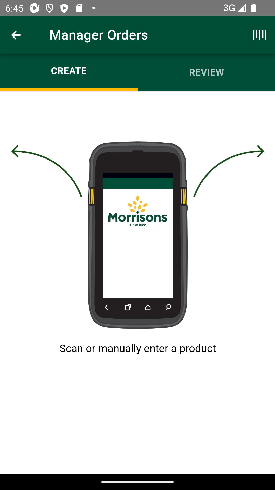
PassSMA-56764_[INT] [INT] Manager order | Review orders | SMA_TC03 To verify that Manager reviews created manager order when created manager order is available in the review to view details. Available for store manager or store colleague (view only).PassSMA-56764_[INT] [INT] Manager order | Review orders | SMA_TC03 To verify that Manager reviews created manager order when created manager order is available in the review to view details. Available for store manager or store colleague (view only).Given I enter Username and Password for SMA Manager userWhen I click on login button for SMAAnd I click on 'stockMngmtText' on page 'HomePagePO_New'And I scroll down to "Manager Orders"And I click "sObjectName" "Manager Orders" on page "ManagerOrderPage"And I click "sTabName" "REVIEW" on page "ManagerOrderPage"And I click on 'BarCodeBtn' on page 'MOCO.ManagerOrderPage'Then I Enter "108524922" in the "BarCodeEdit" on page 'ManagerOrderPage' and searchThen I verify "Manager orders history" is available to view for "Orders" for "MIN,QTY,DEPT,Created by,Start Date,End Date" on "ManagerOrderPage"PassSMA-56764_[INT] [INT] Manager order | Review orders | SMA_TC04 To verify that Manager reviews created manager order when Total orders with number of live orders to be listed on review screen.PassSMA-56764_[INT] [INT] Manager order | Review orders | SMA_TC04 To verify that Manager reviews created manager order when Total orders with number of live orders to be listed on review screen.Given I enter Username and Password for SMA Manager userWhen I click on login button for SMAAnd I click on 'stockMngmtText' on page 'HomePagePO_New'And I scroll down to "Manager Orders"And I click "sObjectName" "Manager Orders" on page "ManagerOrderPage"And I click "sTabName" "REVIEW" on page "ManagerOrderPage"And I click on 'BarCodeBtn' on page 'MOCO.ManagerOrderPage'Then I Enter "113836365" in the "BarCodeEdit" on page 'ManagerOrderPage' and searchThen I verify "Manager orders history" is available to view for "Orders" for "MIN,QTY,DEPT,Created by,Start Date,End Date" on "ManagerOrderPage"Field MIN with value MIN: 113836365Field MIN with value MIN: 106182332Field MIN with value MIN: 106323449Field QTY with value QTY: 7Field QTY with value QTY: 7Field QTY with value QTY: 7Field DEPT with value DEPT:Field DEPT with value DEPT:Field DEPT with value DEPT:Field Created by with value Created by: SMA348 CustomerServiceManagerSITField Created by with value Created by: SMA348 CustomerServiceManagerSITField Created by with value Created by: SMA348 CustomerServiceManagerSITField Start Date with value Start Date: Tue 27 Aug 2024Field Start Date with value Start Date: Tue 27 Aug 2024Field Start Date with value Start Date: Tue 27 Aug 2024Field End Date with value End Date: Wed 04 Sep 2024Field End Date with value End Date: Wed 04 Sep 2024Field End Date with value End Date: Wed 04 Sep 2024PassSMA-56764_[INT] [INT] Manager order | Review orders | SMA_TC05 To verify that Manager reviews created manager order when It should display details like product description, product image, MIN, Qty, Created by, Start Date, End Date, Department name.PassSMA-56764_[INT] [INT] Manager order | Review orders | SMA_TC05 To verify that Manager reviews created manager order when It should display details like product description, product image, MIN, Qty, Created by, Start Date, End Date, Department name.Given I enter Username and Password for SMA Manager userWhen I click on login button for SMAAnd I click on 'stockMngmtText' on page 'HomePagePO_New'And I scroll down to "Manager Orders"And I click "sObjectName" "Manager Orders" on page "ManagerOrderPage"And I click "sTabName" "REVIEW" on page "ManagerOrderPage"And I click on 'BarCodeBtn' on page 'MOCO.ManagerOrderPage'Then I Enter "113836365" in the "BarCodeEdit" on page 'ManagerOrderPage' and searchThen I verify "Manager orders history" is available to view for "Orders" for "MIN,QTY,DEPT,Created by,Start Date,End Date" on "ManagerOrderPage"Field MIN with value MIN: 113836365Field MIN with value MIN: 106182332Field MIN with value MIN: 106323449Field QTY with value QTY: 7Field QTY with value QTY: 7Field QTY with value QTY: 7Field DEPT with value DEPT:Field DEPT with value DEPT:Field DEPT with value DEPT:Field Created by with value Created by: SMA348 CustomerServiceManagerSITField Created by with value Created by: SMA348 CustomerServiceManagerSITField Created by with value Created by: SMA348 CustomerServiceManagerSITField Start Date with value Start Date: Tue 27 Aug 2024Field Start Date with value Start Date: Tue 27 Aug 2024Field Start Date with value Start Date: Tue 27 Aug 2024Field End Date with value End Date: Wed 04 Sep 2024Field End Date with value End Date: Wed 04 Sep 2024Field End Date with value End Date: Wed 04 Sep 2024PassSMA-56764_[INT] [INT] Manager order | Review orders | SMA_TC06 To verify that Manager reviews created manager order when Live orders should be sorted by default with Start date in ascending order (Earliest at the top).PassSMA-56764_[INT] [INT] Manager order | Review orders | SMA_TC06 To verify that Manager reviews created manager order when Live orders should be sorted by default with Start date in ascending order (Earliest at the top).Given I enter Username and Password for SMA Manager userWhen I click on login button for SMAAnd I click on 'stockMngmtText' on page 'HomePagePO_New'And I scroll down to "Manager Orders"And I click "sObjectName" "Manager Orders" on page "ManagerOrderPage"And I click "sTabName" "REVIEW" on page "ManagerOrderPage"And I click on 'BarCodeBtn' on page 'MOCO.ManagerOrderPage'Then I Enter "113836365" in the "BarCodeEdit" on page 'ManagerOrderPage' and searchThen I verify "Orders" is sorted by "Start Date" in "asc" order on page 'ManagerOrderPage'Expected list [Tue 27 Aug 2024, Tue 27 Aug 2024, Tue 27 Aug 2024] Actual List [Tue 27 Aug 2024, Tue 27 Aug 2024, Tue 27 Aug 2024]PassSMA-56764_[INT] [INT] Manager order | Review orders | SMA_TC07 To verify that Manager reviews created manager order when same start date for multiple items then next sorting is by product description in alphabetical order.PassSMA-56764_[INT] [INT] Manager order | Review orders | SMA_TC07 To verify that Manager reviews created manager order when same start date for multiple items then next sorting is by product description in alphabetical order.Given I enter Username and Password for SMA Manager userWhen I click on login button for SMAAnd I click on 'stockMngmtText' on page 'HomePagePO_New'And I scroll down to "Manager Orders"And I click "sObjectName" "Manager Orders" on page "ManagerOrderPage"And I click "sTabName" "REVIEW" on page "ManagerOrderPage"Then I verify "Orders" is sorted by "Start Date" with second sorting by "oProductDtls" "productName" in "asc" order on page 'ManagerOrderPage'PassSMA-56764_[INT] [INT] Manager order | Review orders | SMA_TC08 To verify that Manager reviews created manager order when Review screen to provide sorting by different optionsPassSMA-56764_[INT] [INT] Manager order | Review orders | SMA_TC08 To verify that Manager reviews created manager order when Review screen to provide sorting by different optionsGiven I enter Username and Password for SMA Manager userWhen I click on login button for SMAAnd I click on 'stockMngmtText' on page 'HomePagePO_New'And I scroll down to "Manager Orders"And I click "sObjectName" "Manager Orders" on page "ManagerOrderPage"And I click "sTabName" "REVIEW" on page "ManagerOrderPage"And I click on 'SortByDropDwn' on page 'MOCO.ManagerOrderPage'And I click "ListItem" "Start Date" on page "ManagerOrderPage"Then I verify "Orders" is sorted by "Start Date" in "asc" order on page 'ManagerOrderPage'Expected list [Tue 27 Aug 2024, Tue 27 Aug 2024, Tue 27 Aug 2024, Tue 27 Aug 2024] Actual List [Tue 27 Aug 2024, Tue 27 Aug 2024, Tue 27 Aug 2024, Tue 27 Aug 2024]And I click on 'SortByDropDwn' on page 'MOCO.ManagerOrderPage'And I click "ListItem" "Quantity" on page "ManagerOrderPage"Then I verify "Orders" is sorted by "QTY" in "desc" order on page 'ManagerOrderPage'Expected list [7, 7, 7, 7] Actual List [7, 7, 7, 7]And I click on 'SortByDropDwn' on page 'MOCO.ManagerOrderPage'And I click "ListItem" "User" on page "ManagerOrderPage"Then I verify "Orders" is sorted by "Created by" in "asc" order on page 'ManagerOrderPage'Expected list [SMA015 StoreManagerSIT, SMA348 CustomerServiceManagerSIT, SMA348 CustomerServiceManagerSIT, SMA348 CustomerServiceManagerSIT] Actual List [SMA015 StoreManagerSIT, SMA348 CustomerServiceManagerSIT, SMA348 CustomerServiceManagerSIT, SMA348 CustomerServiceManagerSIT]And I click on 'SortByDropDwn' on page 'MOCO.ManagerOrderPage'And I click "ListItem" "End Date" on page "ManagerOrderPage"Then I verify "Orders" is sorted by "End Date" in "asc" order on page 'ManagerOrderPage'Expected list [Wed 04 Sep 2024, Wed 04 Sep 2024, Wed 04 Sep 2024, Wed 04 Sep 2024] Actual List [Wed 04 Sep 2024, Wed 04 Sep 2024, Wed 04 Sep 2024, Wed 04 Sep 2024]FailSMA-56764_[INT] [INT] Manager order | Review orders | SMA_TC09 To verify that Manager order should get wiped off post End date is lapsed or deleted before end date.FailSMA-56764_[INT] [INT] Manager order | Review orders | SMA_TC09 To verify that Manager order should get wiped off post End date is lapsed or deleted before end date.Given I enter Username and Password for SMA Manager userWhen I click on login button for SMAAnd I click on 'stockMngmtText' on page 'HomePagePO_New'And I scroll down to "Manager Orders"And I click "sObjectName" "Manager Orders" on page "ManagerOrderPage"And I click "sTabName" "REVIEW" on page "ManagerOrderPage"And I Delete products "oProductDtls" "productName" from the list on page "ManagerOrderPage"com.morrisons.common.action.Hook.afterScenario(io.cucumber.java.Scenario)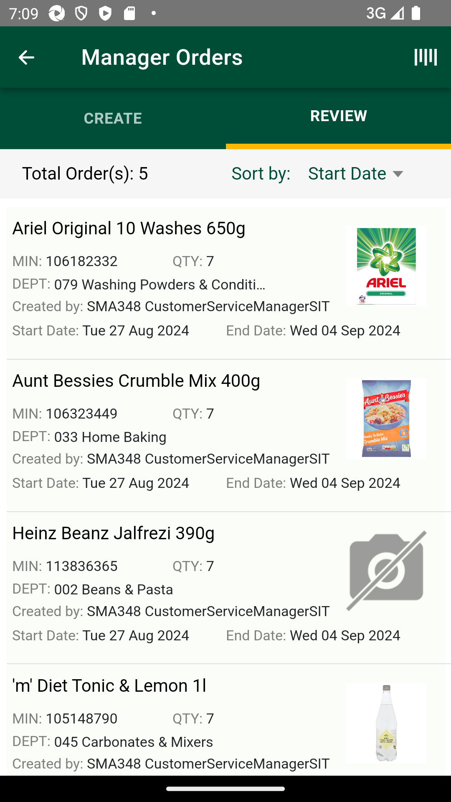
Then I verify "Manager orders" not is available to view for "Orders" for "MIN:113836365" on "ManagerOrderPage"Step skippedPassSMA-56764_[INT] [INT] Manager order | Review orders | SMA_TC09 To verify that Manager order should get wiped off post End date is lapsed or deleted before end date.Given I enter Username and Password for SMA Manager userWhen I click on login button for SMAAnd I click on 'stockMngmtText' on page 'HomePagePO_New'And I scroll down to "Manager Orders"And I click "sObjectName" "Manager Orders" on page "ManagerOrderPage"And I click "sTabName" "REVIEW" on page "ManagerOrderPage"And I click on 'BarCodeBtn' on page 'MOCO.ManagerOrderPage'Then I Enter "113836365" in the "BarCodeEdit" on page 'ManagerOrderPage' and searchThen I verify "Manager orders" is available to view for "Orders" for "MIN:113836365,QTY,DEPT,Created by,Start Date,End Date" on "ManagerOrderPage"Field MIN with value MIN: 113836365Field QTY with value QTY: 7Field QTY with value QTY: 7Field QTY with value QTY: 7Field DEPT with value DEPT:Field DEPT with value DEPT:Field DEPT with value DEPT:Field Created by with value Created by: SMA348 CustomerServiceManagerSITField Created by with value Created by: SMA348 CustomerServiceManagerSITField Created by with value Created by: SMA348 CustomerServiceManagerSITField Start Date with value Start Date: Tue 27 Aug 2024Field Start Date with value Start Date: Tue 27 Aug 2024Field Start Date with value Start Date: Tue 27 Aug 2024Field End Date with value End Date: Wed 04 Sep 2024Field End Date with value End Date: Wed 04 Sep 2024Field End Date with value End Date: Wed 04 Sep 2024FailSMA-56764_[INT] [INT] Manager order | Review orders | SMA_TC10 To verify that Manager reviews created manager order when Search by MIN is available in Review screen.FailSMA-56764_[INT] [INT] Manager order | Review orders | SMA_TC10 To verify that Manager reviews created manager order when Search by MIN is available in Review screen.Given I enter Username and Password for SMA Manager userWhen I click on login button for SMAAnd I click on 'stockMngmtText' on page 'HomePagePO_New'And I scroll down to "Manager Orders"And I click "sObjectName" "Manager Orders" on page "ManagerOrderPage"And I click "sTabName" "REVIEW" on page "ManagerOrderPage"And I click on 'BarCodeBtn' on page 'MOCO.ManagerOrderPage'Then I Enter "108524922" in the "BarCodeEdit" on page 'ManagerOrderPage' and searchThen I verify "Manager orders" not is available to view for "Orders" for "MIN:113836365" on "ManagerOrderPage"com.morrisons.common.action.Hook.afterScenario(io.cucumber.java.Scenario)FailSMA-56764_[INT] [INT] Manager order | Review orders | SMA_TC11 To verify that Manager reviews created manager order when Searched item from Review screen, should club all live orders for searched item under Existing Order label and rest of the orders with All Other Orders label.FailSMA-56764_[INT] [INT] Manager order | Review orders | SMA_TC11 To verify that Manager reviews created manager order when Searched item from Review screen, should club all live orders for searched item under Existing Order label and rest of the orders with All Other Orders label.Given I enter Username and Password for SMA Manager userWhen I click on login button for SMAAnd I click on 'stockMngmtText' on page 'HomePagePO_New'And I scroll down to "Manager Orders"And I click "sObjectName" "Manager Orders" on page "ManagerOrderPage"And I click "sTabName" "REVIEW" on page "ManagerOrderPage"And I click on 'BarCodeBtn' on page 'MOCO.ManagerOrderPage'Then I Enter "106182332" in the "BarCodeEdit" on page 'ManagerOrderPage' and searchThen I Verify "sObjectName" "Existing Order(s)" on page "ManagerOrderPage"And I Verify "sObjectName" "All Other Orders" on page "ManagerOrderPage"Then I verify "OrderList" is present on page "ManagerOrderPage"com.morrisons.common.action.Hook.afterScenario(io.cucumber.java.Scenario)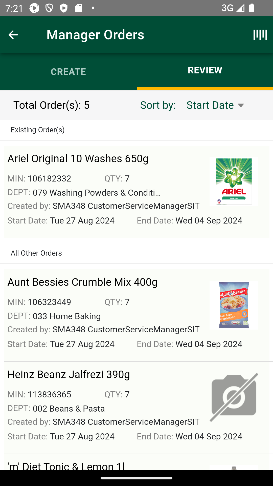
FailSMA-56764_[INT] [INT] Manager order | Review orders | SMA_TC12 To verify that Manager reviews created manager order when For any existing order prompt , when clicked on review orders button should navigate to review screen with Existing order sorted together and then all other orders.FailSMA-56764_[INT] [INT] Manager order | Review orders | SMA_TC12 To verify that Manager reviews created manager order when For any existing order prompt , when clicked on review orders button should navigate to review screen with Existing order sorted together and then all other orders.Given I enter Username and Password for SMA Manager userWhen I click on login button for SMAAnd I click on 'stockMngmtText' on page 'HomePagePO_New'And I scroll down to "Manager Orders"And I click "sObjectName" "Manager Orders" on page "ManagerOrderPage"And I click "sTabName" "CREATE" on page "ManagerOrderPage"And I click on 'BarCodeBtn' on page 'MOCO.ManagerOrderPage'Then I Enter "106182332" in the "BarCodeEdit" on page 'ManagerOrderPage' and searchThen I verify "valid item details" is available to view for "Orders" for "Heinz Beanz Jalfrezi 390g,MIN,EAN,Case Size" on "ManagerOrderPage"Field MIN with value MIN: 106182332Field EAN with value EAN:Field Case Size with value Case Size: 8And I Verify "sObjectName" "Start Date" on page "ManagerOrderPage"And I Verify "sObjectName" "End Date" on page "ManagerOrderPage"And I click on 'startDateBtn' on page 'MOCO.ManagerOrderPage'And I select a date of date range 8And I click "oButton" "DONE" on page "ManagerOrderPage"And I click on 'EndDateBtn' on page 'MOCO.ManagerOrderPage'And I select a date of date range 16And I click "oButton" "DONE" on page "ManagerOrderPage"Then I Enter the quantity as "7", "QuantityEdt" and click on "CREATE_ORDER" button on "MOCO.ManagerOrderPage" pageThen I verify the error message "errorMsg" "errorMsg1" "Existing Order(s) A live order for this product already exists within the date range you have selected. " is displayed on page "ManagerOrderPage"com.morrisons.common.action.Hook.afterScenario(io.cucumber.java.Scenario)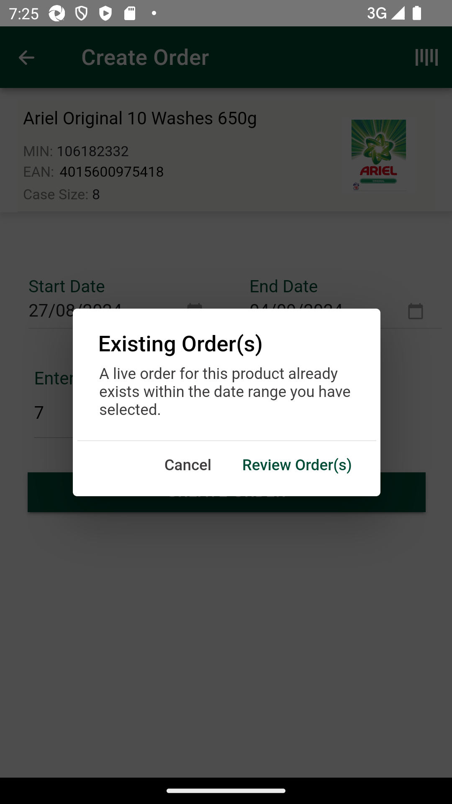
And I Verify "oButton" "Cancel" on page "ManagerOrderPage"Step skippedAnd I Verify "oButton" "Review Order(s)" on page "ManagerOrderPage"Step skippedAnd I click "oButton" "Review Order(s)" on page "ManagerOrderPage"Step skippedThen I verify review order sorted with existing order sorted together and then all other ordersStep skippedPassSMA-56764_[INT] [INT] Manager order | Review orders | SMA_TC13 To verify that Manager reviews created manager order when Review screen should be available to view for manager & colleague during restricted day of manager orders.PassSMA-56764_[INT] [INT] Manager order | Review orders | SMA_TC13 To verify that Manager reviews created manager order when Review screen should be available to view for manager & colleague during restricted day of manager orders.Given I enter Username and Password for SMA Manager userWhen I click on login button for SMAAnd I click on 'stockMngmtText' on page 'HomePagePO_New'And I scroll down to "Manager Orders"And I click "sObjectName" "Manager Orders" on page "ManagerOrderPage"And I click "sTabName" "REVIEW" on page "ManagerOrderPage"And I click on 'BarCodeBtn' on page 'MOCO.ManagerOrderPage'Then I Enter "113836365" in the "BarCodeEdit" on page 'ManagerOrderPage' and searchThen I verify "Manager orders" is available to view for "Orders" for "MIN:113836365,QTY,DEPT,Created by,Start Date,End Date" on "ManagerOrderPage"Field MIN with value MIN: 113836365Field QTY with value QTY: 7Field QTY with value QTY: 7Field QTY with value QTY: 7Field DEPT with value DEPT:Field DEPT with value DEPT:Field DEPT with value DEPT:Field Created by with value Created by: SMA348 CustomerServiceManagerSITField Created by with value Created by: SMA348 CustomerServiceManagerSITField Created by with value Created by: SMA348 CustomerServiceManagerSITField Start Date with value Start Date: Tue 27 Aug 2024Field Start Date with value Start Date: Tue 27 Aug 2024Field Start Date with value Start Date: Tue 27 Aug 2024Field End Date with value End Date: Wed 04 Sep 2024Field End Date with value End Date: Wed 04 Sep 2024Field End Date with value End Date: Wed 04 Sep 2024FailSMA-56764_[INT] [INT] Manager order | Review orders | SMA_TC14 To verify that Manager reviews created manager order when If no order available to view on review screen to show “No Orders Found”,FailSMA-56764_[INT] [INT] Manager order | Review orders | SMA_TC14 To verify that Manager reviews created manager order when If no order available to view on review screen to show “No Orders Found”,Given I enter Username and Password for SMA Manager userWhen I click on login button for SMAAnd I click on 'stockMngmtText' on page 'HomePagePO_New'And I scroll down to "Manager Orders"And I click "sObjectName" "Manager Orders" on page "ManagerOrderPage"And I click "sTabName" "REVIEW" on page "ManagerOrderPage"And I click on 'BarCodeBtn' on page 'MOCO.ManagerOrderPage'Then I Enter "108524922" in the "BarCodeEdit" on page 'ManagerOrderPage' and searchThen I verify the error message "errorMsg1" "errorMsg2" "No Search Results Found No orders matched your search " is displayed on page "ManagerOrderPage"com.morrisons.common.action.Hook.afterScenario(io.cucumber.java.Scenario)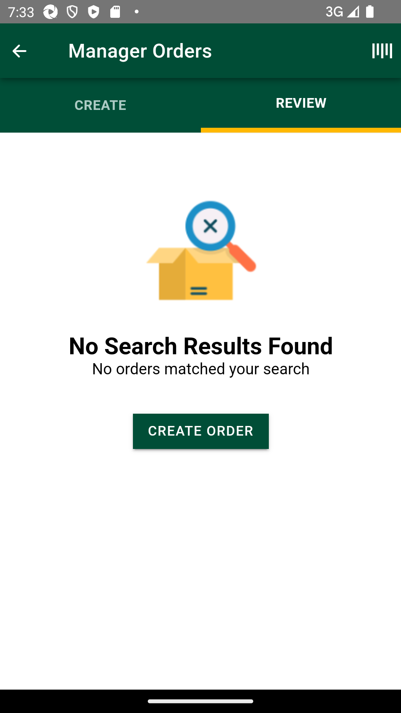
PassSMA-56764-SMA-56903_INT_[DEV-UI] Manager order | Review orders | SMA | Edit Order_TC15 To verify newly created Manager order can be edited for start date , end date and qty when order in not livePassSMA-56764-SMA-56903_INT_[DEV-UI] Manager order | Review orders | SMA | Edit Order_TC15 To verify newly created Manager order can be edited for start date , end date and qty when order in not liveGiven I enter Username and Password for SMA Manager userWhen I click on login button for SMAAnd I click on 'stockMngmtText' on page 'HomePagePO_New'And I scroll down to "Manager Orders"And I click "sObjectName" "Manager Orders" on page "ManagerOrderPage"And I click "sTabName" "REVIEW" on page "ManagerOrderPage"And I click "Orders" "MIN: 106182332" on page "ManagerOrderPage"And I click on 'startDateBtn' on page 'MOCO.ManagerOrderPage'And I select a date of date range 8And I capture the "Start Date"And I click "oButton" "DONE" on page "ManagerOrderPage"And I click on 'EndDateBtn' on page 'MOCO.ManagerOrderPage'And I select a date of date range 16And I capture the "End Date"And I click "oButton" "DONE" on page "ManagerOrderPage"Then I Enter the quantity as "1", "QuantityEdt" and click on "sLocatorName" "UPDATE ORDER" button on "MOCO.ManagerOrderPage" pageAnd I click "oButton" "Confirm" on page "ManagerOrderPage"Then I verify "Manager orders" is available to view for "Orders" for "MIN:106182332,QTY:1,DEPT,Created by,Start Date:runtimedate,End Date:runtimedate" on "ManagerOrderPage"Field MIN with value MIN: 106182332Field QTY with value QTY: 1Field DEPT with value DEPT:Field DEPT with value DEPT:Field DEPT with value DEPT:Field DEPT with value DEPT:Field Created by with value Created by: SMA348 CustomerServiceManagerSITField Created by with value Created by: SMA348 CustomerServiceManagerSITField Created by with value Created by: SMA348 CustomerServiceManagerSITField Created by with value Created by: SMA348 CustomerServiceManagerSITField Start Date with value Start Date: Tue 27 Aug 2024Field End Date with value End Date: Wed 04 Sep 2024Field End Date with value End Date: Wed 04 Sep 2024Field End Date with value End Date: Wed 04 Sep 2024Field End Date with value End Date: Wed 04 Sep 2024FailSMA-56764-SMA-56903_INT_[DEV-UI] Manager order | Review orders | SMA | Edit Order_TC16 To verify newly created Manager order can be not edited for start date but edited for end date and qty when order in liveFailSMA-56764-SMA-56903_INT_[DEV-UI] Manager order | Review orders | SMA | Edit Order_TC16 To verify newly created Manager order can be not edited for start date but edited for end date and qty when order in liveGiven I enter Username and Password for SMA Manager userWhen I click on login button for SMAAnd I click on 'stockMngmtText' on page 'HomePagePO_New'And I scroll down to "Manager Orders"And I click "sObjectName" "Manager Orders" on page "ManagerOrderPage"And I click "sTabName" "REVIEW" on page "ManagerOrderPage"And I click "Orders" "MIN: 113836365" on page "ManagerOrderPage"And I click on 'startDateBtn' on page 'MOCO.ManagerOrderPage'And I select a date of date range 8And I capture the "Start Date"And I click "oButton" "DONE" on page "ManagerOrderPage"And I click on 'EndDateBtn' on page 'MOCO.ManagerOrderPage'And I select a date of date range 16And I capture the "End Date"And I click "oButton" "DONE" on page "ManagerOrderPage"Then I verify "Start Date" has not been edited as date selectedcom.morrisons.common.action.Hook.afterScenario(io.cucumber.java.Scenario)And I verify "End Date" has been edited as date selectedStep skippedPassSMA-56764-SMA-56904_INT_[DEV-UI] Manager order | Review orders | SMA | Search Order_TC17 To verify newly created Manager order can be Searched item by MIN is available in Review screen.PassSMA-56764-SMA-56904_INT_[DEV-UI] Manager order | Review orders | SMA | Search Order_TC17 To verify newly created Manager order can be Searched item by MIN is available in Review screen.Given I enter Username and Password for SMA Manager userWhen I click on login button for SMAAnd I click on 'stockMngmtText' on page 'HomePagePO_New'And I scroll down to "Manager Orders"And I click "sObjectName" "Manager Orders" on page "ManagerOrderPage"And I click "sTabName" "REVIEW" on page "ManagerOrderPage"And I click on 'BarCodeBtn' on page 'MOCO.ManagerOrderPage'Then I Enter "106182332" in the "BarCodeEdit" on page 'ManagerOrderPage' and searchThen I verify "Manager orders" is available to view for "Orders" for "MIN:106182332,QTY,DEPT,Created by,Start Date,End Date" on "ManagerOrderPage"Field MIN with value MIN: 106182332Field QTY with value QTY: 1Field QTY with value QTY: 7Field QTY with value QTY: 7Field DEPT with value DEPT:Field DEPT with value DEPT:Field DEPT with value DEPT:Field Created by with value Created by: SMA348 CustomerServiceManagerSITField Created by with value Created by: SMA348 CustomerServiceManagerSITField Created by with value Created by: SMA348 CustomerServiceManagerSITField Start Date with value Start Date: Tue 27 Aug 2024Field Start Date with value Start Date: Tue 27 Aug 2024Field Start Date with value Start Date: Tue 27 Aug 2024Field End Date with value End Date: Wed 04 Sep 2024Field End Date with value End Date: Wed 04 Sep 2024Field End Date with value End Date: Wed 04 Sep 2024PassSMA-56764-SMA-56904_INT_[DEV-UI] Manager order | Review orders | SMA | Search Order_TC18 To verify newly created Manager order can be Searched item from Review screen, should club all live orders for searched item under Existing Order label and rest of the orders with All Other Orders labelPassSMA-56764-SMA-56904_INT_[DEV-UI] Manager order | Review orders | SMA | Search Order_TC18 To verify newly created Manager order can be Searched item from Review screen, should club all live orders for searched item under Existing Order label and rest of the orders with All Other Orders labelGiven I enter Username and Password for SMA Manager userWhen I click on login button for SMAAnd I click on 'stockMngmtText' on page 'HomePagePO_New'And I scroll down to "Manager Orders"And I click "sObjectName" "Manager Orders" on page "ManagerOrderPage"And I click "sTabName" "REVIEW" on page "ManagerOrderPage"And I click on 'BarCodeBtn' on page 'MOCO.ManagerOrderPage'Then I Enter "106182332" in the "BarCodeEdit" on page 'ManagerOrderPage' and searchThen I verify "valid item details" is available to view for "Orders" for "MIN:106182332,QTY,DEPT,Created by,Start Date,End Date" on "ManagerOrderPage"Field MIN with value MIN: 106182332Field QTY with value QTY: 1Field QTY with value QTY: 7Field QTY with value QTY: 7Field DEPT with value DEPT:Field DEPT with value DEPT:Field DEPT with value DEPT:Field Created by with value Created by: SMA348 CustomerServiceManagerSITField Created by with value Created by: SMA348 CustomerServiceManagerSITField Created by with value Created by: SMA348 CustomerServiceManagerSITField Start Date with value Start Date: Tue 27 Aug 2024Field Start Date with value Start Date: Tue 27 Aug 2024Field Start Date with value Start Date: Tue 27 Aug 2024Field End Date with value End Date: Wed 04 Sep 2024Field End Date with value End Date: Wed 04 Sep 2024Field End Date with value End Date: Wed 04 Sep 2024Then I verify review order sorted with existing order sorted together and then all other ordersExpected list [Ariel Original 10 Washes 650g] Actual List [Ariel Original 10 Washes 650g]Expected list [Aunt Bessies Crumble Mix 400g] Actual List [Aunt Bessies Crumble Mix 400g]FailSMA-56764-SMA-56904_INT_[DEV-UI] Manager order | Review orders | SMA | Search Order_TC19 To verify If order NOT found for Item searched by MIN/Barcode/QR Code then message stating No search result matched should be shown with Create Order button to navigateFailSMA-56764-SMA-56904_INT_[DEV-UI] Manager order | Review orders | SMA | Search Order_TC19 To verify If order NOT found for Item searched by MIN/Barcode/QR Code then message stating No search result matched should be shown with Create Order button to navigateGiven I enter Username and Password for SMA Manager userWhen I click on login button for SMAAnd I click on 'stockMngmtText' on page 'HomePagePO_New'And I scroll down to "Manager Orders"And I click "sObjectName" "Manager Orders" on page "ManagerOrderPage"And I click "sTabName" "REVIEW" on page "ManagerOrderPage"And I click on 'BarCodeBtn' on page 'MOCO.ManagerOrderPage'Then I Enter "108527922" in the "BarCodeEdit" on page 'ManagerOrderPage' and searchThen I verify the error message "errorMsg1" "errorMsg2" "Product Not Found The product you entered could not be found. Please try searching again. " is displayed on page "ManagerOrderPage"com.morrisons.common.action.Hook.afterScenario(io.cucumber.java.Scenario)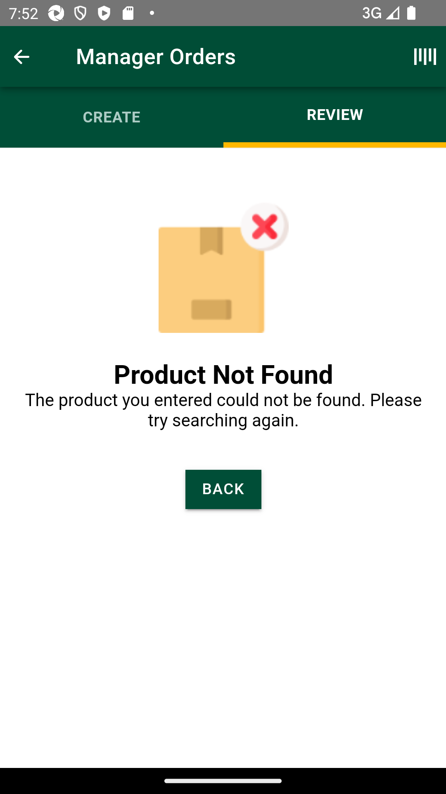
FailSMA-56764-SMA-56904_INT_[DEV-UI] Manager order | Review orders | SMA | Search Order_TC20 To verify if order NOT found for item searched by PIN/Outer case barcode then a validation message for Invalid Input prompt should be showinFailSMA-56764-SMA-56904_INT_[DEV-UI] Manager order | Review orders | SMA | Search Order_TC20 To verify if order NOT found for item searched by PIN/Outer case barcode then a validation message for Invalid Input prompt should be showinGiven I enter Username and Password for SMA Manager userWhen I click on login button for SMAAnd I click on 'stockMngmtText' on page 'HomePagePO_New'And I scroll down to "Manager Orders"And I click "sObjectName" "Manager Orders" on page "ManagerOrderPage"And I click on 'BarCodeBtn' on page 'MOCO.ManagerOrderPage'Then I Enter "108524922" in the "BarCodeEdit" on page 'ManagerOrderPage' and searchThen I verify the error message "errorMsg" "errorMsg1" "Invalid Input You cannot create an order using outer case barcode. Please use either: Product Barcode Shelf Edge Label MIN " is displayed on page "ManagerOrderPage"com.morrisons.common.action.Hook.afterScenario(io.cucumber.java.Scenario)Then I click "oButton" "OK" on page "ManagerOrderPage"Step skippedFailSMA-56764-SMA-56904_INT_[DEV-UI] Manager order | Review orders | SMA | Search Order_TC21 To verify If order NOT found for Item searched by MIN/Barcode/QR Code AND item is delisted/deranged/restricted/inactive then message stating No search result matched should be shown with Create Order button to navigate.FailSMA-56764-SMA-56904_INT_[DEV-UI] Manager order | Review orders | SMA | Search Order_TC21 To verify If order NOT found for Item searched by MIN/Barcode/QR Code AND item is delisted/deranged/restricted/inactive then message stating No search result matched should be shown with Create Order button to navigate.Given I enter Username and Password for SMA Manager userWhen I click on login button for SMAAnd I click on 'stockMngmtText' on page 'HomePagePO_New'And I scroll down to "Manager Orders"And I click "sObjectName" "Manager Orders" on page "ManagerOrderPage"And I click on 'BarCodeBtn' on page 'MOCO.ManagerOrderPage'Then I Enter "108524922" in the "BarCodeEdit" on page 'ManagerOrderPage' and searchThen I verify the error message "errorMsg1" "errorMsg2" "Product Not Found The product you entered could not be found. Please try searching again. " is displayed on page "ManagerOrderPage"com.morrisons.common.action.Hook.afterScenario(io.cucumber.java.Scenario)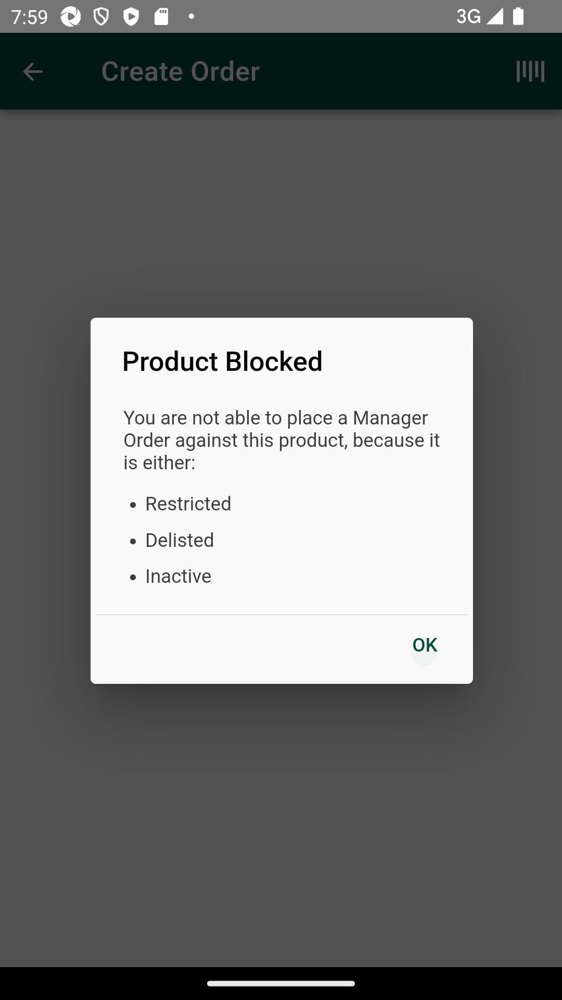
Then I click "oButton" "OK" on page "ManagerOrderPage"Step skippedFailSMA-56764-SMA-56904_INT_[DEV-UI] Manager order | Review orders | SMA | Search Order_TC22 To verify If order has been created as per rule set e.g.Start date is after 28 days.Meanwhile item got delisted/Inactive/Dept restricted/ Item got restricted or any config change. And user search this item then it should be shown under label of “Existing orders”FailSMA-56764-SMA-56904_INT_[DEV-UI] Manager order | Review orders | SMA | Search Order_TC22 To verify If order has been created as per rule set e.g.Start date is after 28 days.Meanwhile item got delisted/Inactive/Dept restricted/ Item got restricted or any config change. And user search this item then it should be shown under label of “Existing orders”Given I enter Username and Password for SMA Manager userWhen I click on login button for SMAAnd I click on 'stockMngmtText' on page 'HomePagePO_New'And I scroll down to "Manager Orders"And I click "sObjectName" "Manager Orders" on page "ManagerOrderPage"And I click on 'BarCodeBtn' on page 'MOCO.ManagerOrderPage'Then I Enter "108524922" in the "BarCodeEdit" on page 'ManagerOrderPage' and searchThen I verify the error message "errorMsg" "errorMsg1" "Existing orders" is displayed on page "ManagerOrderPage"com.morrisons.common.action.Hook.afterScenario(io.cucumber.java.Scenario)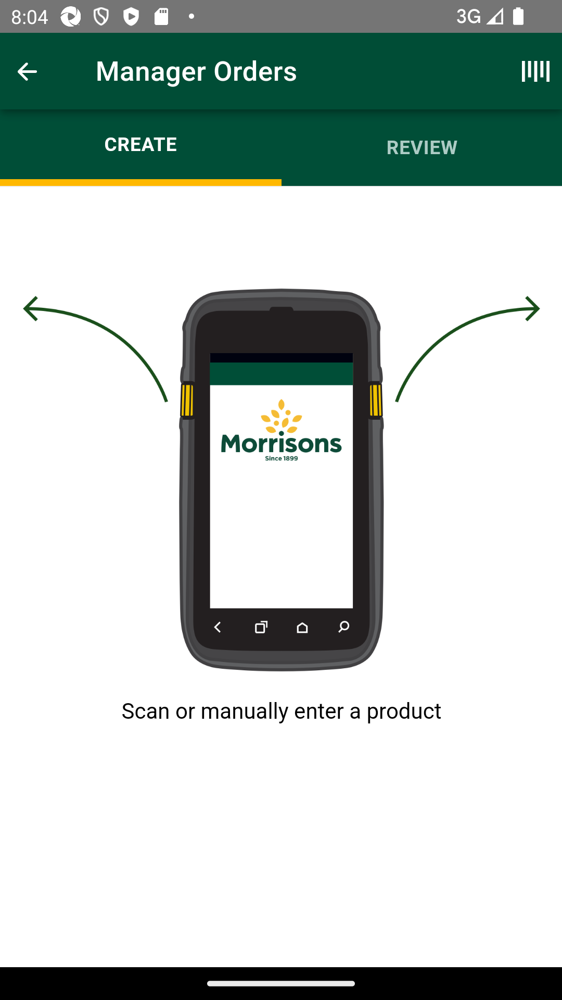
Then I click "oButton" "OK" on page "ManagerOrderPage"Step skippedFailSMA-56764-SMA-56904_INT_[DEV-UI] Manager order | Review orders | SMA | Search Order_TC23 To verify If no order available to view on review screen then it should show “No Orders Found” as mentionedFailSMA-56764-SMA-56904_INT_[DEV-UI] Manager order | Review orders | SMA | Search Order_TC23 To verify If no order available to view on review screen then it should show “No Orders Found” as mentionedGiven I enter Username and Password for SMA Manager userWhen I click on login button for SMAAnd I click on 'stockMngmtText' on page 'HomePagePO_New'And I scroll down to "Manager Orders"And I click "sObjectName" "Manager Orders" on page "ManagerOrderPage"And I click on 'BarCodeBtn' on page 'MOCO.ManagerOrderPage'Then I Enter "108524922" in the "BarCodeEdit" on page 'ManagerOrderPage' and searchThen I verify the error message "errorMsg" "errorMsg1" "No Orders Found" is displayed on page "ManagerOrderPage"com.morrisons.common.action.Hook.afterScenario(io.cucumber.java.Scenario)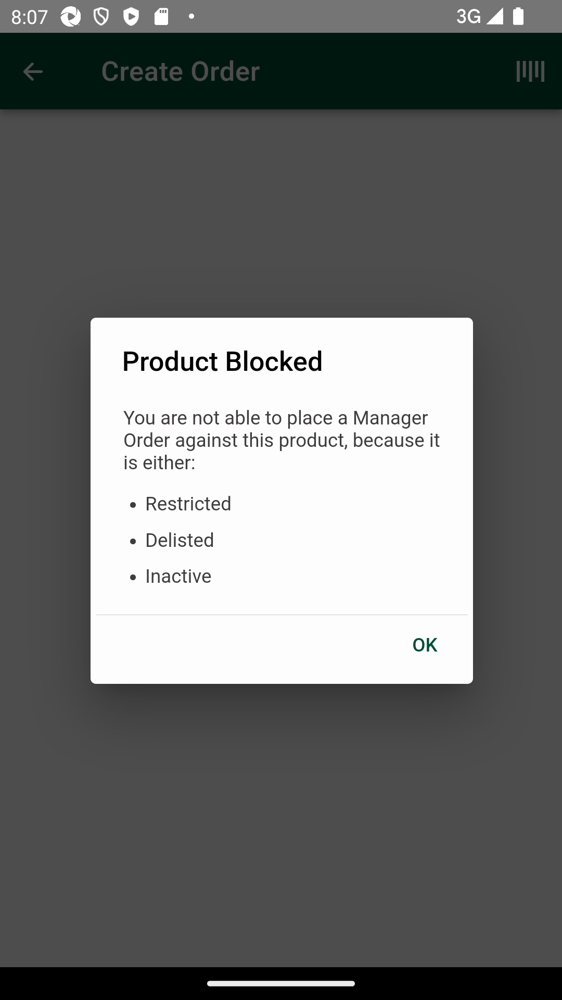
PassSMA-56764-SMA-56904_SMA-57079_INT_[DEV-UI] Manager order | Review orders | Amend Orders | SMA | Search Order_TC24 To verify user is allowed to edit start date for Non Live Orders as per configuration around start date.PassSMA-56764-SMA-56904_SMA-57079_INT_[DEV-UI] Manager order | Review orders | Amend Orders | SMA | Search Order_TC24 To verify user is allowed to edit start date for Non Live Orders as per configuration around start date.Given I enter Username and Password for SMA Manager userWhen I click on login button for SMAAnd I click on 'stockMngmtText' on page 'HomePagePO_New'And I scroll down to "Manager Orders"And I click "sObjectName" "Manager Orders" on page "ManagerOrderPage"And I click "sTabName" "REVIEW" on page "ManagerOrderPage"And I click "Orders" "MIN: 106182332" on page "ManagerOrderPage"And I click on 'startDateBtn' on page 'MOCO.ManagerOrderPage'And I select a date of date range 8And I capture the "Start Date"And I click "oButton" "DONE" on page "ManagerOrderPage"And I click on 'EndDateBtn' on page 'MOCO.ManagerOrderPage'And I select a date of date range 16And I capture the "End Date"And I click "oButton" "DONE" on page "ManagerOrderPage"Then I verify "Start Date" has been edited as date selectedFailSMA-56764-SMA-56904_SMA-57079_INT_[DEV-UI] Manager order | Review orders | Amend Orders |SMA | Search Order_TC25 To verify when user is clicked on update order after amend, prompt is shown while updating orderFailSMA-56764-SMA-56904_SMA-57079_INT_[DEV-UI] Manager order | Review orders | Amend Orders |SMA | Search Order_TC25 To verify when user is clicked on update order after amend, prompt is shown while updating orderGiven I enter Username and Password for SMA Manager userWhen I click on login button for SMAAnd I click on 'stockMngmtText' on page 'HomePagePO_New'And I scroll down to "Manager Orders"And I click "sObjectName" "Manager Orders" on page "ManagerOrderPage"And I click "sTabName" "REVIEW" on page "ManagerOrderPage"And I click "Orders" "MIN: 106182332" on page "ManagerOrderPage"Then I Enter the quantity as "", "QuantityEdt" and click on "sLocatorName" "UPDATE ORDER" button on "MOCO.ManagerOrderPage" page And I click "oButton" "Confirm" on page "ManagerOrderPage"com.morrisons.common.action.Hook.afterScenario(io.cucumber.java.Scenario)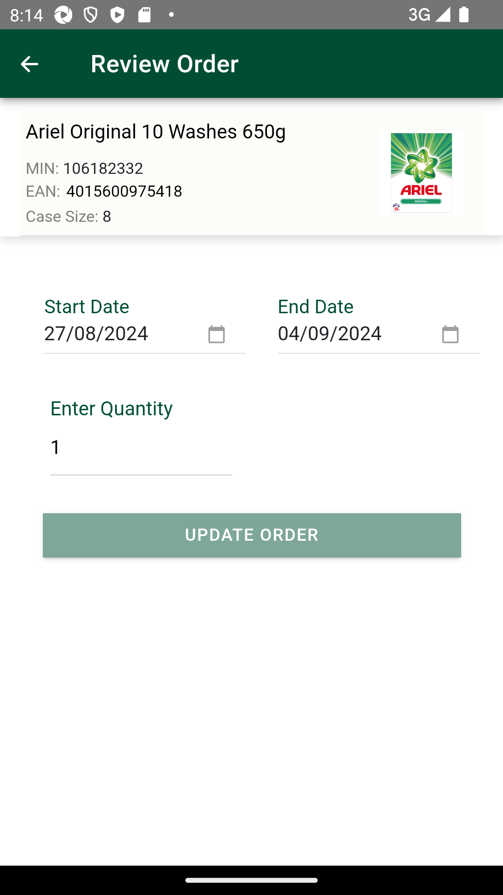
Then I verify success "Manager order updated successfully" for ionicStep skippedThen I verify "Manager orders" is available to view for "Orders" for "MIN:106182332,QTY:1,DEPT,Created by,Start Date,End Date" on "ManagerOrderPage"Step skippedFailSMA-56764-SMA-56904_SMA-57079_INT_[DEV-UI] Manager order | Review orders | Amend Orders | SMA | Search Order_TC26 To verify user is not allowed to edit start date for live orders where start date is past or equal to current dateFailSMA-56764-SMA-56904_SMA-57079_INT_[DEV-UI] Manager order | Review orders | Amend Orders | SMA | Search Order_TC26 To verify user is not allowed to edit start date for live orders where start date is past or equal to current dateGiven I enter Username and Password for SMA Manager userWhen I click on login button for SMAAnd I click on 'stockMngmtText' on page 'HomePagePO_New'And I scroll down to "Manager Orders"And I click "sObjectName" "Manager Orders" on page "ManagerOrderPage"And I click "sTabName" "REVIEW" on page "ManagerOrderPage"And I click "Orders" "MIN: 113836365" on page "ManagerOrderPage"And I click on 'startDateBtn' on page 'MOCO.ManagerOrderPage'And I select a date of date range 8And I capture the "Start Date"And I click "oButton" "DONE" on page "ManagerOrderPage"And I click on 'EndDateBtn' on page 'MOCO.ManagerOrderPage'And I select a date of date range 16And I capture the "End Date"And I click "oButton" "DONE" on page "ManagerOrderPage"Then I verify "Start Date" has not been edited as date selectedcom.morrisons.common.action.Hook.afterScenario(io.cucumber.java.Scenario)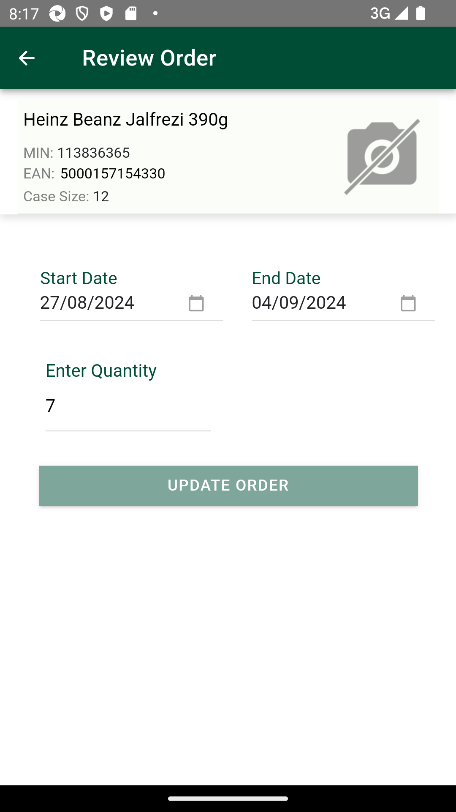
PassSMA-56764-SMA-56904_SMA-57079_INT_[DEV-UI] Manager order | Review orders | Amend Orders | SMA | Search Order_TC27 To verify user is allowed to edit only end date for live orders and it is greater then current date and it is working as per min end date , max end date configurationPassSMA-56764-SMA-56904_SMA-57079_INT_[DEV-UI] Manager order | Review orders | Amend Orders | SMA | Search Order_TC27 To verify user is allowed to edit only end date for live orders and it is greater then current date and it is working as per min end date , max end date configurationGiven I enter Username and Password for SMA Manager userWhen I click on login button for SMAAnd I click on 'stockMngmtText' on page 'HomePagePO_New'And I scroll down to "Manager Orders"And I click "sObjectName" "Manager Orders" on page "ManagerOrderPage"And I click "sTabName" "REVIEW" on page "ManagerOrderPage"And I click "Orders" "MIN: 113836365" on page "ManagerOrderPage"And I click on 'startDateBtn' on page 'MOCO.ManagerOrderPage'And I select a date of date range 8And I capture the "Start Date"And I click "oButton" "DONE" on page "ManagerOrderPage"And I click on 'EndDateBtn' on page 'MOCO.ManagerOrderPage'And I select a date of date range 16And I capture the "End Date"And I click "oButton" "DONE" on page "ManagerOrderPage"Then I verify "End Date" has been edited as date selectedFailSMA-56764-SMA-56904_SMA-57079_INT_[DEV-UI] Manager order | Review orders | Amend Orders | SMA | Search Order_TC28 To verify user is allowed to change quantity in amend for all live and non live orders and prompt is shown while updating ordersFailSMA-56764-SMA-56904_SMA-57079_INT_[DEV-UI] Manager order | Review orders | Amend Orders | SMA | Search Order_TC28 To verify user is allowed to change quantity in amend for all live and non live orders and prompt is shown while updating ordersGiven I enter Username and Password for SMA Manager userWhen I click on login button for SMAAnd I click on 'stockMngmtText' on page 'HomePagePO_New'And I scroll down to "Manager Orders"And I click "sObjectName" "Manager Orders" on page "ManagerOrderPage"And I click "sTabName" "REVIEW" on page "ManagerOrderPage"And I click "Orders" "MIN: 106182332" on page "ManagerOrderPage"Then I Enter the quantity as "1", "QuantityEdt" and click on "sLocatorName" "UPDATE ORDER" button on "MOCO.ManagerOrderPage" pageAnd I click "oButton" "Confirm" on page "ManagerOrderPage"com.morrisons.common.action.Hook.afterScenario(io.cucumber.java.Scenario)Then I verify "Manager orders" is available to view for "Orders" for "MIN:106182332,QTY:1,DEPT,Created by,Start Date,End Date" on "ManagerOrderPage"Step skippedFailSMA-56764-SMA-56904_SMA-57079_INT_[DEV-UI] Manager order | Review orders | Amend Orders | SMA | Search Order_TC29 To verify when user edit order and its overlapping with existing order start date or end date and existing order popup validation is shown while updating ordersFailSMA-56764-SMA-56904_SMA-57079_INT_[DEV-UI] Manager order | Review orders | Amend Orders | SMA | Search Order_TC29 To verify when user edit order and its overlapping with existing order start date or end date and existing order popup validation is shown while updating ordersGiven I enter Username and Password for SMA Manager userWhen I click on login button for SMAAnd I click on 'stockMngmtText' on page 'HomePagePO_New'And I scroll down to "Manager Orders"And I click "sObjectName" "Manager Orders" on page "ManagerOrderPage"And I click "sTabName" "CREATE" on page "ManagerOrderPage"And I click on 'BarCodeBtn' on page 'MOCO.ManagerOrderPage'Then I Enter "108524922" in the "BarCodeEdit" on page 'ManagerOrderPage' and searchThen I verify "valid item details" is available to view for "Orders" for "Heinz Beanz Jalfrezi 390g,MIN,EAN,Case Size" on "ManagerOrderPage"And I Verify "sObjectName" "Start Date" on page "ManagerOrderPage"com.morrisons.common.action.Hook.afterScenario(io.cucumber.java.Scenario)And I Verify "sObjectName" "End Date" on page "ManagerOrderPage"Step skippedAnd I click on 'startDateBtn' on page 'MOCO.ManagerOrderPage'Step skippedAnd I select a date of date range 8Step skippedAnd I click "oButton" "DONE" on page "ManagerOrderPage"Step skippedAnd I click on 'EndDateBtn' on page 'MOCO.ManagerOrderPage'Step skippedAnd I select a date of date range 16Step skippedAnd I click "oButton" "DONE" on page "ManagerOrderPage"Step skippedThen I Enter the quantity as "7", "QuantityEdt" and click on "CREATE_ORDER" button on "MOCO.ManagerOrderPage" pageStep skippedThen I verify the error message "errorMsg" "errorMsg1" "Existing Order(s) A live order for this product already exists within the date range you have selected. " is displayed on page "ManagerOrderPage"Step skippedAnd I Verify "oButton" "Cancel" on page "ManagerOrderPage"Step skippedAnd I Verify "oButton" "Review Order(s)" on page "ManagerOrderPage"Step skippedAnd I click "oButton" "Review Order(s)" on page "ManagerOrderPage"Step skippedAnd I Verify "sObjectName" "Manager Orders" on page "ManagerOrderPage"Step skippedThen I verify "Manager orders history" is available to view for "Orders" for "MIN,QTY,DEPT,Created by,Start Date,End Date" on "ManagerOrderPage"Step skippedAnd I click on 'BackBtn' on page 'MOCO.ManagerOrderPage'Step skippedAnd I scroll down to "Manager Orders"Step skippedAnd I click "sObjectName" "Manager Orders" on page "ManagerOrderPage"Step skippedAnd I click "sTabName" "CREATE" on page "ManagerOrderPage"Step skippedAnd I click on 'BarCodeBtn' on page 'MOCO.ManagerOrderPage'Step skippedThen I Enter "108524922" in the "BarCodeEdit" on page 'ManagerOrderPage' and searchStep skippedThen I verify "valid item details" is available to view for "Orders" for "Heinz Beanz Jalfrezi 390g,MIN,EAN,Case Size" on "ManagerOrderPage"Step skippedAnd I Verify "sObjectName" "Start Date" on page "ManagerOrderPage"Step skippedAnd I Verify "sObjectName" "End Date" on page "ManagerOrderPage"Step skippedAnd I click on 'startDateBtn' on page 'MOCO.ManagerOrderPage'Step skippedAnd I select a date of date range 8Step skippedAnd I click "oButton" "DONE" on page "ManagerOrderPage"Step skippedAnd I click on 'EndDateBtn' on page 'MOCO.ManagerOrderPage'Step skippedAnd I select a date of date range 16Step skippedAnd I click "oButton" "DONE" on page "ManagerOrderPage"Step skippedThen I Enter the quantity as "7", "QuantityEdt" and click on "CREATE_ORDER" button on "MOCO.ManagerOrderPage" pageStep skippedThen I verify the error message "errorMsg" "errorMsg1" "Existing Order(s) A live order for this product already exists within the date range you have selected. " is displayed on page "ManagerOrderPage"Step skippedAnd I Verify "oButton" "Cancel" on page "ManagerOrderPage"Step skippedAnd I Verify "oButton" "Review Order(s)" on page "ManagerOrderPage"Step skippedAnd I click "oButton" "Cancel" on page "ManagerOrderPage"Step skippedFailSMA-56764-SMA-56904_SMA-57079_INT_[DEV-UI] Manager order | Review orders | Amend Orders | SMA | Search Order_TC30 To verify when user edit order for live and non live orders and clicks on confirm option of prompt message shown while updating ordersFailSMA-56764-SMA-56904_SMA-57079_INT_[DEV-UI] Manager order | Review orders | Amend Orders | SMA | Search Order_TC30 To verify when user edit order for live and non live orders and clicks on confirm option of prompt message shown while updating ordersGiven I enter Username and Password for SMA Manager userWhen I click on login button for SMAAnd I click on 'stockMngmtText' on page 'HomePagePO_New'And I click "sTabName" "REVIEW" on page "ManagerOrderPage"com.morrisons.common.action.Hook.afterScenario(io.cucumber.java.Scenario)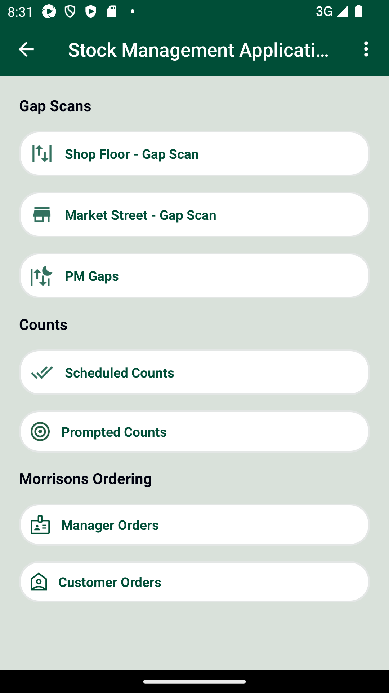
And I click "Orders" "MIN: 106182332" on page "ManagerOrderPage"Step skippedAnd I click on 'startDateBtn' on page 'MOCO.ManagerOrderPage'Step skippedAnd I select a date of date range 8Step skippedAnd I capture the "Start Date"Step skippedAnd I click "oButton" "DONE" on page "ManagerOrderPage"Step skippedAnd I click on 'EndDateBtn' on page 'MOCO.ManagerOrderPage'Step skippedAnd I select a date of date range 16Step skippedAnd I capture the "End Date"Step skippedAnd I click "oButton" "DONE" on page "ManagerOrderPage"Step skippedThen I Enter the quantity as "1", "QuantityEdt" and click on "sLocatorName" "UPDATE ORDER" button on "MOCO.ManagerOrderPage" pageStep skippedAnd I click "oButton" "Confirm" on page "ManagerOrderPage"Step skippedThen I verify success "existing order" for ionicStep skippedThen I verify "Manager orders" is available to view for "Orders" for "MIN:106182332,QTY:1,DEPT,Created by,Start Date:runtimedate,End Date:runtimedate" on "ManagerOrderPage"Step skippedPassSMA-56764-SMA-56904_SMA-57079_INT_[DEV-UI] Manager order | Review orders | Amend Orders | SMA | Search Order_TC31 To verify after amend when updated details are shown in review orders page, sorting is as per default sorting or selected sorting parameter.PassSMA-56764-SMA-56904_SMA-57079_INT_[DEV-UI] Manager order | Review orders | Amend Orders | SMA | Search Order_TC31 To verify after amend when updated details are shown in review orders page, sorting is as per default sorting or selected sorting parameter.Given I enter Username and Password for SMA Manager userWhen I click on login button for SMAAnd I click on 'stockMngmtText' on page 'HomePagePO_New'And I scroll down to "Manager Orders"And I click "sObjectName" "Manager Orders" on page "ManagerOrderPage"And I click "sTabName" "REVIEW" on page "ManagerOrderPage"And I click on 'SortByDropDwn' on page 'MOCO.ManagerOrderPage'And I click "ListItem" "Start Date" on page "ManagerOrderPage"Then I verify "Orders" is sorted by "Start Date" in "asc" order on page 'ManagerOrderPage'Expected list [Tue 27 Aug 2024, Tue 27 Aug 2024, Tue 27 Aug 2024, Tue 27 Aug 2024] Actual List [Tue 27 Aug 2024, Tue 27 Aug 2024, Tue 27 Aug 2024, Tue 27 Aug 2024]And I click on 'SortByDropDwn' on page 'MOCO.ManagerOrderPage'And I click "ListItem" "Quantity" on page "ManagerOrderPage"Then I verify "Orders" is sorted by "QTY" in "desc" order on page 'ManagerOrderPage'Expected list [7, 7, 7, 5] Actual List [7, 7, 7, 5]And I click on 'SortByDropDwn' on page 'MOCO.ManagerOrderPage'And I click "ListItem" "User" on page "ManagerOrderPage"Then I verify "Orders" is sorted by "Created by" in "asc" order on page 'ManagerOrderPage'Expected list [SMA015 StoreManagerSIT, SMA348 CustomerServiceManagerSIT, SMA348 CustomerServiceManagerSIT, SMA348 CustomerServiceManagerSIT] Actual List [SMA015 StoreManagerSIT, SMA348 CustomerServiceManagerSIT, SMA348 CustomerServiceManagerSIT, SMA348 CustomerServiceManagerSIT]And I click on 'SortByDropDwn' on page 'MOCO.ManagerOrderPage'And I click "ListItem" "End Date" on page "ManagerOrderPage"Then I verify "Orders" is sorted by "End Date" in "asc" order on page 'ManagerOrderPage'Expected list [Wed 04 Sep 2024, Wed 04 Sep 2024, Wed 04 Sep 2024, Wed 04 Sep 2024] Actual List [Wed 04 Sep 2024, Wed 04 Sep 2024, Wed 04 Sep 2024, Wed 04 Sep 2024]
-
java.lang.IndexOutOfBoundsException
2 tests
java.lang.IndexOutOfBoundsException
2 failedStatus Timestamp TestName Fail 19:11:00 PM And I Delete products "oProductDtls" "productName" from the list on page "ManagerOrderPage" SMA-56764_[INT] [INT] Manager order | Review orders |.SMA-56764_[INT] [INT] Manager order | Review orders | SMA_TC09 To verify that Manager order should get wiped off post End date is lapsed or deleted before end date..And I Delete products "oProductDtls" "productName" from the list on page "ManagerOrderPage"Fail 19:19:17 PM Then I verify "Manager orders" not is available to view for "Orders" for "MIN:113836365" on "ManagerOrderPage" SMA-56764_[INT] [INT] Manager order | Review orders |.SMA-56764_[INT] [INT] Manager order | Review orders | SMA_TC10 To verify that Manager reviews created manager order when Search by MIN is available in Review screen..Then I verify "Manager orders" not is available to view for "Orders" for "MIN:113836365" on "ManagerOrderPage" -
java.lang.AssertionError
8 tests
java.lang.AssertionError
8 failedStatus Timestamp TestName Fail 19:27:37 PM Then I verify the error message "errorMsg" "errorMsg1" "Existing Order(s) A live order for this product already exists within the date range you have selected. " is displayed on page "ManagerOrderPage" SMA-56764_[INT] [INT] Manager order | Review orders |.SMA-56764_[INT] [INT] Manager order | Review orders | SMA_TC12 To verify that Manager reviews created manager order when For any existing order prompt , when clicked on review orders button should navigate to review screen with Existing order sorted together and then all other orders..Then I verify the error message "errorMsg" "errorMsg1" "Existing Order(s) A live order for this product already exists within the date range you have selected. " is displayed on page "ManagerOrderPage"Fail 19:35:19 PM Then I verify the error message "errorMsg1" "errorMsg2" "No Search Results Found No orders matched your search " is displayed on page "ManagerOrderPage" SMA-56764_[INT] [INT] Manager order | Review orders |.SMA-56764_[INT] [INT] Manager order | Review orders | SMA_TC14 To verify that Manager reviews created manager order when If no order available to view on review screen to show “No Orders Found”,.Then I verify the error message "errorMsg1" "errorMsg2" "No Search Results Found No orders matched your search " is displayed on page "ManagerOrderPage"Fail 19:42:18 PM Then I verify "Start Date" has not been edited as date selected SMA-56764_[INT] [INT] Manager order | Review orders |.SMA-56764-SMA-56903_INT_[DEV-UI] Manager order | Review orders | SMA | Edit Order_TC16 To verify newly created Manager order can be not edited for start date but edited for end date and qty when order in live.Then I verify "Start Date" has not been edited as date selectedFail 19:54:11 PM Then I verify the error message "errorMsg1" "errorMsg2" "Product Not Found The product you entered could not be found. Please try searching again. " is displayed on page "ManagerOrderPage" SMA-56764_[INT] [INT] Manager order | Review orders |.SMA-56764-SMA-56904_INT_[DEV-UI] Manager order | Review orders | SMA | Search Order_TC19 To verify If order NOT found for Item searched by MIN/Barcode/QR Code then message stating No search result matched should be shown with Create Order button to navigate.Then I verify the error message "errorMsg1" "errorMsg2" "Product Not Found The product you entered could not be found. Please try searching again. " is displayed on page "ManagerOrderPage"Fail 20:15:58 PM And I click "oButton" "Confirm" on page "ManagerOrderPage" SMA-56764_[INT] [INT] Manager order | Review orders |.SMA-56764-SMA-56904_SMA-57079_INT_[DEV-UI] Manager order | Review orders | Amend Orders |SMA | Search Order_TC25 To verify when user is clicked on update order after amend, prompt is shown while updating order.And I click "oButton" "Confirm" on page "ManagerOrderPage"Fail 20:19:46 PM Then I verify "Start Date" has not been edited as date selected SMA-56764_[INT] [INT] Manager order | Review orders |.SMA-56764-SMA-56904_SMA-57079_INT_[DEV-UI] Manager order | Review orders | Amend Orders | SMA | Search Order_TC26 To verify user is not allowed to edit start date for live orders where start date is past or equal to current date.Then I verify "Start Date" has not been edited as date selectedFail 20:25:46 PM And I click "oButton" "Confirm" on page "ManagerOrderPage" SMA-56764_[INT] [INT] Manager order | Review orders |.SMA-56764-SMA-56904_SMA-57079_INT_[DEV-UI] Manager order | Review orders | Amend Orders | SMA | Search Order_TC28 To verify user is allowed to change quantity in amend for all live and non live orders and prompt is shown while updating orders.And I click "oButton" "Confirm" on page "ManagerOrderPage"Fail 20:33:18 PM And I click "sTabName" "REVIEW" on page "ManagerOrderPage" SMA-56764_[INT] [INT] Manager order | Review orders |.SMA-56764-SMA-56904_SMA-57079_INT_[DEV-UI] Manager order | Review orders | Amend Orders | SMA | Search Order_TC30 To verify when user edit order for live and non live orders and clicks on confirm option of prompt message shown while updating orders.And I click "sTabName" "REVIEW" on page "ManagerOrderPage" -
org.openqa.selenium.TimeoutException
4 tests
org.openqa.selenium.TimeoutException
4 failedStatus Timestamp TestName Fail 19:57:48 PM Then I verify the error message "errorMsg" "errorMsg1" "Invalid Input You cannot create an order using outer case barcode. Please use either: Product Barcode Shelf Edge Label MIN " is displayed on page "ManagerOrderPage" SMA-56764_[INT] [INT] Manager order | Review orders |.SMA-56764-SMA-56904_INT_[DEV-UI] Manager order | Review orders | SMA | Search Order_TC20 To verify if order NOT found for item searched by PIN/Outer case barcode then a validation message for Invalid Input prompt should be showin.Then I verify the error message "errorMsg" "errorMsg1" "Invalid Input You cannot create an order using outer case barcode. Please use either: Product Barcode Shelf Edge Label MIN " is displayed on page "ManagerOrderPage"Fail 20:01:42 PM Then I verify the error message "errorMsg1" "errorMsg2" "Product Not Found The product you entered could not be found. Please try searching again. " is displayed on page "ManagerOrderPage" SMA-56764_[INT] [INT] Manager order | Review orders |.SMA-56764-SMA-56904_INT_[DEV-UI] Manager order | Review orders | SMA | Search Order_TC21 To verify If order NOT found for Item searched by MIN/Barcode/QR Code AND item is delisted/deranged/restricted/inactive then message stating No search result matched should be shown with Create Order button to navigate..Then I verify the error message "errorMsg1" "errorMsg2" "Product Not Found The product you entered could not be found. Please try searching again. " is displayed on page "ManagerOrderPage"Fail 20:05:47 PM Then I verify the error message "errorMsg" "errorMsg1" "Existing orders" is displayed on page "ManagerOrderPage" SMA-56764_[INT] [INT] Manager order | Review orders |.SMA-56764-SMA-56904_INT_[DEV-UI] Manager order | Review orders | SMA | Search Order_TC22 To verify If order has been created as per rule set e.g.Start date is after 28 days.Meanwhile item got delisted/Inactive/Dept restricted/ Item got restricted or any config change. And user search this item then it should be shown under label of “Existing orders”.Then I verify the error message "errorMsg" "errorMsg1" "Existing orders" is displayed on page "ManagerOrderPage"Fail 20:09:42 PM Then I verify the error message "errorMsg" "errorMsg1" "No Orders Found" is displayed on page "ManagerOrderPage" SMA-56764_[INT] [INT] Manager order | Review orders |.SMA-56764-SMA-56904_INT_[DEV-UI] Manager order | Review orders | SMA | Search Order_TC23 To verify If no order available to view on review screen then it should show “No Orders Found” as mentioned.Then I verify the error message "errorMsg" "errorMsg1" "No Orders Found" is displayed on page "ManagerOrderPage" -
org.openqa.selenium.NoSuchElementException
3 tests
org.openqa.selenium.NoSuchElementException
3 failedStatus Timestamp TestName Fail 18:46:34 PM Then I should get a Message saying "Manager Order is currently Unavailable You can view the existing order but are not able to place new orders at this time." and should be able to click the "OK" Button SMA-56764_[INT] [INT] Manager order | Review orders |.SMA-56764_[INT] [INT] Manager order | Review orders | SMA_TC02 To verify Manager creates an order using valid item.Then I should get a Message saying "Manager Order is currently Unavailable You can view the existing order but are not able to place new orders at this time." and should be able to click the "OK" ButtonFail 19:23:11 PM Then I verify "OrderList" is present on page "ManagerOrderPage" SMA-56764_[INT] [INT] Manager order | Review orders |.SMA-56764_[INT] [INT] Manager order | Review orders | SMA_TC11 To verify that Manager reviews created manager order when Searched item from Review screen, should club all live orders for searched item under Existing Order label and rest of the orders with All Other Orders label..Then I verify "OrderList" is present on page "ManagerOrderPage"Fail 20:31:08 PM And I Verify "sObjectName" "Start Date" on page "ManagerOrderPage" SMA-56764_[INT] [INT] Manager order | Review orders |.SMA-56764-SMA-56904_SMA-57079_INT_[DEV-UI] Manager order | Review orders | Amend Orders | SMA | Search Order_TC29 To verify when user edit order and its overlapping with existing order start date or end date and existing order popup validation is shown while updating orders.And I Verify "sObjectName" "Start Date" on page "ManagerOrderPage"
-
@StartDateValid
2 tests
@StartDateValid
2 passedStatus Timestamp TestName Pass 19:00:24 PM SMA-56764_[INT] [INT] Manager order | Review orders | SMA_TC06 To verify that Manager reviews created manager order when Live orders should be sorted by default with Start date in ascending order (Earliest at the top). SMA-56764_[INT] [INT] Manager order | Review orders |.SMA-56764_[INT] [INT] Manager order | Review orders | SMA_TC06 To verify that Manager reviews created manager order when Live orders should be sorted by default with Start date in ascending order (Earliest at the top).Pass 19:00:24 PM SMA-56764_[INT] [INT] Manager order | Review orders | SMA_TC06 To verify that Manager reviews created manager order when Live orders should be sorted by default with Start date in ascending order (Earliest at the top). SMA-56764_[INT] [INT] Manager order | Review orders |.SMA-56764_[INT] [INT] Manager order | Review orders | SMA_TC06 To verify that Manager reviews created manager order when Live orders should be sorted by default with Start date in ascending order (Earliest at the top). -
@SortByDiffOptions
2 tests
@SortByDiffOptions
2 passedStatus Timestamp TestName Pass 19:06:29 PM SMA-56764_[INT] [INT] Manager order | Review orders | SMA_TC08 To verify that Manager reviews created manager order when Review screen to provide sorting by different options SMA-56764_[INT] [INT] Manager order | Review orders |.SMA-56764_[INT] [INT] Manager order | Review orders | SMA_TC08 To verify that Manager reviews created manager order when Review screen to provide sorting by different optionsPass 19:06:29 PM SMA-56764_[INT] [INT] Manager order | Review orders | SMA_TC08 To verify that Manager reviews created manager order when Review screen to provide sorting by different options SMA-56764_[INT] [INT] Manager order | Review orders |.SMA-56764_[INT] [INT] Manager order | Review orders | SMA_TC08 To verify that Manager reviews created manager order when Review screen to provide sorting by different options -
@startdateVerf
2 tests
@startdateVerf
2 failedStatus Timestamp TestName Fail 20:17:41 PM SMA-56764-SMA-56904_SMA-57079_INT_[DEV-UI] Manager order | Review orders | Amend Orders | SMA | Search Order_TC26 To verify user is not allowed to edit start date for live orders where start date is past or equal to current date SMA-56764_[INT] [INT] Manager order | Review orders |.SMA-56764-SMA-56904_SMA-57079_INT_[DEV-UI] Manager order | Review orders | Amend Orders | SMA | Search Order_TC26 To verify user is not allowed to edit start date for live orders where start date is past or equal to current dateFail 20:17:41 PM SMA-56764-SMA-56904_SMA-57079_INT_[DEV-UI] Manager order | Review orders | Amend Orders | SMA | Search Order_TC26 To verify user is not allowed to edit start date for live orders where start date is past or equal to current date SMA-56764_[INT] [INT] Manager order | Review orders |.SMA-56764-SMA-56904_SMA-57079_INT_[DEV-UI] Manager order | Review orders | Amend Orders | SMA | Search Order_TC26 To verify user is not allowed to edit start date for live orders where start date is past or equal to current date -
@Review_MOCO_UI
34 tests
@Review_MOCO_UI
16 passed 18 failedStatus Timestamp TestName Fail 18:39:17 PM SMA-56764_[INT] [INT] Manager order | Review orders | Pass 18:39:17 PM SMA-56688_TC01_[SERVICE] MOCO | POST Order Endpoint_To verify 201 Reponse fro Create manager Order works successfully SMA-56764_[INT] [INT] Manager order | Review orders |.SMA-56688_TC01_[SERVICE] MOCO | POST Order Endpoint_To verify 201 Reponse fro Create manager Order works successfullyPass 18:40:49 PM SMA-56764_[INT] [INT] Manager order | Review orders | SMA_TC01 To verify that when Store Colleague and Sotre Manager want to review created live manager orders then Manager orders history is available to view and manage as per store need. SMA-56764_[INT] [INT] Manager order | Review orders |.SMA-56764_[INT] [INT] Manager order | Review orders | SMA_TC01 To verify that when Store Colleague and Sotre Manager want to review created live manager orders then Manager orders history is available to view and manage as per store need.Fail 18:43:15 PM SMA-56764_[INT] [INT] Manager order | Review orders | SMA_TC02 To verify Manager creates an order using valid item SMA-56764_[INT] [INT] Manager order | Review orders |.SMA-56764_[INT] [INT] Manager order | Review orders | SMA_TC02 To verify Manager creates an order using valid itemPass 18:47:57 PM SMA-56764_[INT] [INT] Manager order | Review orders | SMA_TC03 To verify that Manager reviews created manager order when created manager order is available in the review to view details. Available for store manager or store colleague (view only). SMA-56764_[INT] [INT] Manager order | Review orders |.SMA-56764_[INT] [INT] Manager order | Review orders | SMA_TC03 To verify that Manager reviews created manager order when created manager order is available in the review to view details. Available for store manager or store colleague (view only).Pass 18:52:42 PM SMA-56764_[INT] [INT] Manager order | Review orders | SMA_TC04 To verify that Manager reviews created manager order when Total orders with number of live orders to be listed on review screen. SMA-56764_[INT] [INT] Manager order | Review orders |.SMA-56764_[INT] [INT] Manager order | Review orders | SMA_TC04 To verify that Manager reviews created manager order when Total orders with number of live orders to be listed on review screen.Pass 18:56:37 PM SMA-56764_[INT] [INT] Manager order | Review orders | SMA_TC05 To verify that Manager reviews created manager order when It should display details like product description, product image, MIN, Qty, Created by, Start Date, End Date, Department name. SMA-56764_[INT] [INT] Manager order | Review orders |.SMA-56764_[INT] [INT] Manager order | Review orders | SMA_TC05 To verify that Manager reviews created manager order when It should display details like product description, product image, MIN, Qty, Created by, Start Date, End Date, Department name.Pass 19:00:24 PM SMA-56764_[INT] [INT] Manager order | Review orders | SMA_TC06 To verify that Manager reviews created manager order when Live orders should be sorted by default with Start date in ascending order (Earliest at the top). SMA-56764_[INT] [INT] Manager order | Review orders |.SMA-56764_[INT] [INT] Manager order | Review orders | SMA_TC06 To verify that Manager reviews created manager order when Live orders should be sorted by default with Start date in ascending order (Earliest at the top).Pass 19:04:05 PM SMA-56764_[INT] [INT] Manager order | Review orders | SMA_TC07 To verify that Manager reviews created manager order when same start date for multiple items then next sorting is by product description in alphabetical order. SMA-56764_[INT] [INT] Manager order | Review orders |.SMA-56764_[INT] [INT] Manager order | Review orders | SMA_TC07 To verify that Manager reviews created manager order when same start date for multiple items then next sorting is by product description in alphabetical order.Pass 19:06:29 PM SMA-56764_[INT] [INT] Manager order | Review orders | SMA_TC08 To verify that Manager reviews created manager order when Review screen to provide sorting by different options SMA-56764_[INT] [INT] Manager order | Review orders |.SMA-56764_[INT] [INT] Manager order | Review orders | SMA_TC08 To verify that Manager reviews created manager order when Review screen to provide sorting by different optionsFail 19:09:37 PM SMA-56764_[INT] [INT] Manager order | Review orders | SMA_TC09 To verify that Manager order should get wiped off post End date is lapsed or deleted before end date. SMA-56764_[INT] [INT] Manager order | Review orders |.SMA-56764_[INT] [INT] Manager order | Review orders | SMA_TC09 To verify that Manager order should get wiped off post End date is lapsed or deleted before end date.Pass 19:12:10 PM SMA-56764_[INT] [INT] Manager order | Review orders | SMA_TC09 To verify that Manager order should get wiped off post End date is lapsed or deleted before end date. SMA-56764_[INT] [INT] Manager order | Review orders |.SMA-56764_[INT] [INT] Manager order | Review orders | SMA_TC09 To verify that Manager order should get wiped off post End date is lapsed or deleted before end date.Fail 19:16:15 PM SMA-56764_[INT] [INT] Manager order | Review orders | SMA_TC10 To verify that Manager reviews created manager order when Search by MIN is available in Review screen. SMA-56764_[INT] [INT] Manager order | Review orders |.SMA-56764_[INT] [INT] Manager order | Review orders | SMA_TC10 To verify that Manager reviews created manager order when Search by MIN is available in Review screen.Fail 19:20:22 PM SMA-56764_[INT] [INT] Manager order | Review orders | SMA_TC11 To verify that Manager reviews created manager order when Searched item from Review screen, should club all live orders for searched item under Existing Order label and rest of the orders with All Other Orders label. SMA-56764_[INT] [INT] Manager order | Review orders |.SMA-56764_[INT] [INT] Manager order | Review orders | SMA_TC11 To verify that Manager reviews created manager order when Searched item from Review screen, should club all live orders for searched item under Existing Order label and rest of the orders with All Other Orders label.Fail 19:24:34 PM SMA-56764_[INT] [INT] Manager order | Review orders | SMA_TC12 To verify that Manager reviews created manager order when For any existing order prompt , when clicked on review orders button should navigate to review screen with Existing order sorted together and then all other orders. SMA-56764_[INT] [INT] Manager order | Review orders |.SMA-56764_[INT] [INT] Manager order | Review orders | SMA_TC12 To verify that Manager reviews created manager order when For any existing order prompt , when clicked on review orders button should navigate to review screen with Existing order sorted together and then all other orders.Pass 19:28:34 PM SMA-56764_[INT] [INT] Manager order | Review orders | SMA_TC13 To verify that Manager reviews created manager order when Review screen should be available to view for manager & colleague during restricted day of manager orders. SMA-56764_[INT] [INT] Manager order | Review orders |.SMA-56764_[INT] [INT] Manager order | Review orders | SMA_TC13 To verify that Manager reviews created manager order when Review screen should be available to view for manager & colleague during restricted day of manager orders.Fail 19:32:20 PM SMA-56764_[INT] [INT] Manager order | Review orders | SMA_TC14 To verify that Manager reviews created manager order when If no order available to view on review screen to show “No Orders Found”, SMA-56764_[INT] [INT] Manager order | Review orders |.SMA-56764_[INT] [INT] Manager order | Review orders | SMA_TC14 To verify that Manager reviews created manager order when If no order available to view on review screen to show “No Orders Found”,Pass 19:36:15 PM SMA-56764-SMA-56903_INT_[DEV-UI] Manager order | Review orders | SMA | Edit Order_TC15 To verify newly created Manager order can be edited for start date , end date and qty when order in not live SMA-56764_[INT] [INT] Manager order | Review orders |.SMA-56764-SMA-56903_INT_[DEV-UI] Manager order | Review orders | SMA | Edit Order_TC15 To verify newly created Manager order can be edited for start date , end date and qty when order in not liveFail 19:40:17 PM SMA-56764-SMA-56903_INT_[DEV-UI] Manager order | Review orders | SMA | Edit Order_TC16 To verify newly created Manager order can be not edited for start date but edited for end date and qty when order in live SMA-56764_[INT] [INT] Manager order | Review orders |.SMA-56764-SMA-56903_INT_[DEV-UI] Manager order | Review orders | SMA | Edit Order_TC16 To verify newly created Manager order can be not edited for start date but edited for end date and qty when order in livePass 19:43:19 PM SMA-56764-SMA-56904_INT_[DEV-UI] Manager order | Review orders | SMA | Search Order_TC17 To verify newly created Manager order can be Searched item by MIN is available in Review screen. SMA-56764_[INT] [INT] Manager order | Review orders |.SMA-56764-SMA-56904_INT_[DEV-UI] Manager order | Review orders | SMA | Search Order_TC17 To verify newly created Manager order can be Searched item by MIN is available in Review screen.Pass 19:47:04 PM SMA-56764-SMA-56904_INT_[DEV-UI] Manager order | Review orders | SMA | Search Order_TC18 To verify newly created Manager order can be Searched item from Review screen, should club all live orders for searched item under Existing Order label and rest of the orders with All Other Orders label SMA-56764_[INT] [INT] Manager order | Review orders |.SMA-56764-SMA-56904_INT_[DEV-UI] Manager order | Review orders | SMA | Search Order_TC18 To verify newly created Manager order can be Searched item from Review screen, should club all live orders for searched item under Existing Order label and rest of the orders with All Other Orders labelFail 19:51:08 PM SMA-56764-SMA-56904_INT_[DEV-UI] Manager order | Review orders | SMA | Search Order_TC19 To verify If order NOT found for Item searched by MIN/Barcode/QR Code then message stating No search result matched should be shown with Create Order button to navigate SMA-56764_[INT] [INT] Manager order | Review orders |.SMA-56764-SMA-56904_INT_[DEV-UI] Manager order | Review orders | SMA | Search Order_TC19 To verify If order NOT found for Item searched by MIN/Barcode/QR Code then message stating No search result matched should be shown with Create Order button to navigateFail 19:55:08 PM SMA-56764-SMA-56904_INT_[DEV-UI] Manager order | Review orders | SMA | Search Order_TC20 To verify if order NOT found for item searched by PIN/Outer case barcode then a validation message for Invalid Input prompt should be showin SMA-56764_[INT] [INT] Manager order | Review orders |.SMA-56764-SMA-56904_INT_[DEV-UI] Manager order | Review orders | SMA | Search Order_TC20 To verify if order NOT found for item searched by PIN/Outer case barcode then a validation message for Invalid Input prompt should be showinFail 19:58:57 PM SMA-56764-SMA-56904_INT_[DEV-UI] Manager order | Review orders | SMA | Search Order_TC21 To verify If order NOT found for Item searched by MIN/Barcode/QR Code AND item is delisted/deranged/restricted/inactive then message stating No search result matched should be shown with Create Order button to navigate. SMA-56764_[INT] [INT] Manager order | Review orders |.SMA-56764-SMA-56904_INT_[DEV-UI] Manager order | Review orders | SMA | Search Order_TC21 To verify If order NOT found for Item searched by MIN/Barcode/QR Code AND item is delisted/deranged/restricted/inactive then message stating No search result matched should be shown with Create Order button to navigate.Fail 20:02:50 PM SMA-56764-SMA-56904_INT_[DEV-UI] Manager order | Review orders | SMA | Search Order_TC22 To verify If order has been created as per rule set e.g.Start date is after 28 days.Meanwhile item got delisted/Inactive/Dept restricted/ Item got restricted or any config change. And user search this item then it should be shown under label of “Existing orders” SMA-56764_[INT] [INT] Manager order | Review orders |.SMA-56764-SMA-56904_INT_[DEV-UI] Manager order | Review orders | SMA | Search Order_TC22 To verify If order has been created as per rule set e.g.Start date is after 28 days.Meanwhile item got delisted/Inactive/Dept restricted/ Item got restricted or any config change. And user search this item then it should be shown under label of “Existing orders”Fail 20:06:57 PM SMA-56764-SMA-56904_INT_[DEV-UI] Manager order | Review orders | SMA | Search Order_TC23 To verify If no order available to view on review screen then it should show “No Orders Found” as mentioned SMA-56764_[INT] [INT] Manager order | Review orders |.SMA-56764-SMA-56904_INT_[DEV-UI] Manager order | Review orders | SMA | Search Order_TC23 To verify If no order available to view on review screen then it should show “No Orders Found” as mentionedPass 20:10:52 PM SMA-56764-SMA-56904_SMA-57079_INT_[DEV-UI] Manager order | Review orders | Amend Orders | SMA | Search Order_TC24 To verify user is allowed to edit start date for Non Live Orders as per configuration around start date. SMA-56764_[INT] [INT] Manager order | Review orders |.SMA-56764-SMA-56904_SMA-57079_INT_[DEV-UI] Manager order | Review orders | Amend Orders | SMA | Search Order_TC24 To verify user is allowed to edit start date for Non Live Orders as per configuration around start date.Fail 20:13:58 PM SMA-56764-SMA-56904_SMA-57079_INT_[DEV-UI] Manager order | Review orders | Amend Orders |SMA | Search Order_TC25 To verify when user is clicked on update order after amend, prompt is shown while updating order SMA-56764_[INT] [INT] Manager order | Review orders |.SMA-56764-SMA-56904_SMA-57079_INT_[DEV-UI] Manager order | Review orders | Amend Orders |SMA | Search Order_TC25 To verify when user is clicked on update order after amend, prompt is shown while updating orderFail 20:17:41 PM SMA-56764-SMA-56904_SMA-57079_INT_[DEV-UI] Manager order | Review orders | Amend Orders | SMA | Search Order_TC26 To verify user is not allowed to edit start date for live orders where start date is past or equal to current date SMA-56764_[INT] [INT] Manager order | Review orders |.SMA-56764-SMA-56904_SMA-57079_INT_[DEV-UI] Manager order | Review orders | Amend Orders | SMA | Search Order_TC26 To verify user is not allowed to edit start date for live orders where start date is past or equal to current datePass 20:20:49 PM SMA-56764-SMA-56904_SMA-57079_INT_[DEV-UI] Manager order | Review orders | Amend Orders | SMA | Search Order_TC27 To verify user is allowed to edit only end date for live orders and it is greater then current date and it is working as per min end date , max end date configuration SMA-56764_[INT] [INT] Manager order | Review orders |.SMA-56764-SMA-56904_SMA-57079_INT_[DEV-UI] Manager order | Review orders | Amend Orders | SMA | Search Order_TC27 To verify user is allowed to edit only end date for live orders and it is greater then current date and it is working as per min end date , max end date configurationFail 20:23:52 PM SMA-56764-SMA-56904_SMA-57079_INT_[DEV-UI] Manager order | Review orders | Amend Orders | SMA | Search Order_TC28 To verify user is allowed to change quantity in amend for all live and non live orders and prompt is shown while updating orders SMA-56764_[INT] [INT] Manager order | Review orders |.SMA-56764-SMA-56904_SMA-57079_INT_[DEV-UI] Manager order | Review orders | Amend Orders | SMA | Search Order_TC28 To verify user is allowed to change quantity in amend for all live and non live orders and prompt is shown while updating ordersFail 20:27:32 PM SMA-56764-SMA-56904_SMA-57079_INT_[DEV-UI] Manager order | Review orders | Amend Orders | SMA | Search Order_TC29 To verify when user edit order and its overlapping with existing order start date or end date and existing order popup validation is shown while updating orders SMA-56764_[INT] [INT] Manager order | Review orders |.SMA-56764-SMA-56904_SMA-57079_INT_[DEV-UI] Manager order | Review orders | Amend Orders | SMA | Search Order_TC29 To verify when user edit order and its overlapping with existing order start date or end date and existing order popup validation is shown while updating ordersFail 20:31:58 PM SMA-56764-SMA-56904_SMA-57079_INT_[DEV-UI] Manager order | Review orders | Amend Orders | SMA | Search Order_TC30 To verify when user edit order for live and non live orders and clicks on confirm option of prompt message shown while updating orders SMA-56764_[INT] [INT] Manager order | Review orders |.SMA-56764-SMA-56904_SMA-57079_INT_[DEV-UI] Manager order | Review orders | Amend Orders | SMA | Search Order_TC30 To verify when user edit order for live and non live orders and clicks on confirm option of prompt message shown while updating ordersPass 20:34:34 PM SMA-56764-SMA-56904_SMA-57079_INT_[DEV-UI] Manager order | Review orders | Amend Orders | SMA | Search Order_TC31 To verify after amend when updated details are shown in review orders page, sorting is as per default sorting or selected sorting parameter. SMA-56764_[INT] [INT] Manager order | Review orders |.SMA-56764-SMA-56904_SMA-57079_INT_[DEV-UI] Manager order | Review orders | Amend Orders | SMA | Search Order_TC31 To verify after amend when updated details are shown in review orders page, sorting is as per default sorting or selected sorting parameter. -
@ItemNotFound
2 tests
@ItemNotFound
2 failedStatus Timestamp TestName Fail 19:51:08 PM SMA-56764-SMA-56904_INT_[DEV-UI] Manager order | Review orders | SMA | Search Order_TC19 To verify If order NOT found for Item searched by MIN/Barcode/QR Code then message stating No search result matched should be shown with Create Order button to navigate SMA-56764_[INT] [INT] Manager order | Review orders |.SMA-56764-SMA-56904_INT_[DEV-UI] Manager order | Review orders | SMA | Search Order_TC19 To verify If order NOT found for Item searched by MIN/Barcode/QR Code then message stating No search result matched should be shown with Create Order button to navigateFail 19:51:08 PM SMA-56764-SMA-56904_INT_[DEV-UI] Manager order | Review orders | SMA | Search Order_TC19 To verify If order NOT found for Item searched by MIN/Barcode/QR Code then message stating No search result matched should be shown with Create Order button to navigate SMA-56764_[INT] [INT] Manager order | Review orders |.SMA-56764-SMA-56904_INT_[DEV-UI] Manager order | Review orders | SMA | Search Order_TC19 To verify If order NOT found for Item searched by MIN/Barcode/QR Code then message stating No search result matched should be shown with Create Order button to navigate -
@StartDateEditNonLv
2 tests
@StartDateEditNonLv
2 passedStatus Timestamp TestName Pass 20:10:52 PM SMA-56764-SMA-56904_SMA-57079_INT_[DEV-UI] Manager order | Review orders | Amend Orders | SMA | Search Order_TC24 To verify user is allowed to edit start date for Non Live Orders as per configuration around start date. SMA-56764_[INT] [INT] Manager order | Review orders |.SMA-56764-SMA-56904_SMA-57079_INT_[DEV-UI] Manager order | Review orders | Amend Orders | SMA | Search Order_TC24 To verify user is allowed to edit start date for Non Live Orders as per configuration around start date.Pass 20:10:52 PM SMA-56764-SMA-56904_SMA-57079_INT_[DEV-UI] Manager order | Review orders | Amend Orders | SMA | Search Order_TC24 To verify user is allowed to edit start date for Non Live Orders as per configuration around start date. SMA-56764_[INT] [INT] Manager order | Review orders |.SMA-56764-SMA-56904_SMA-57079_INT_[DEV-UI] Manager order | Review orders | Amend Orders | SMA | Search Order_TC24 To verify user is allowed to edit start date for Non Live Orders as per configuration around start date. -
@Order_TC18
2 tests
@Order_TC18
2 passedStatus Timestamp TestName Pass 19:47:04 PM SMA-56764-SMA-56904_INT_[DEV-UI] Manager order | Review orders | SMA | Search Order_TC18 To verify newly created Manager order can be Searched item from Review screen, should club all live orders for searched item under Existing Order label and rest of the orders with All Other Orders label SMA-56764_[INT] [INT] Manager order | Review orders |.SMA-56764-SMA-56904_INT_[DEV-UI] Manager order | Review orders | SMA | Search Order_TC18 To verify newly created Manager order can be Searched item from Review screen, should club all live orders for searched item under Existing Order label and rest of the orders with All Other Orders labelPass 19:47:04 PM SMA-56764-SMA-56904_INT_[DEV-UI] Manager order | Review orders | SMA | Search Order_TC18 To verify newly created Manager order can be Searched item from Review screen, should club all live orders for searched item under Existing Order label and rest of the orders with All Other Orders label SMA-56764_[INT] [INT] Manager order | Review orders |.SMA-56764-SMA-56904_INT_[DEV-UI] Manager order | Review orders | SMA | Search Order_TC18 To verify newly created Manager order can be Searched item from Review screen, should club all live orders for searched item under Existing Order label and rest of the orders with All Other Orders label -
@SearchByMIN
2 tests
@SearchByMIN
2 failedStatus Timestamp TestName Fail 19:16:15 PM SMA-56764_[INT] [INT] Manager order | Review orders | SMA_TC10 To verify that Manager reviews created manager order when Search by MIN is available in Review screen. SMA-56764_[INT] [INT] Manager order | Review orders |.SMA-56764_[INT] [INT] Manager order | Review orders | SMA_TC10 To verify that Manager reviews created manager order when Search by MIN is available in Review screen.Fail 19:16:15 PM SMA-56764_[INT] [INT] Manager order | Review orders | SMA_TC10 To verify that Manager reviews created manager order when Search by MIN is available in Review screen. SMA-56764_[INT] [INT] Manager order | Review orders |.SMA-56764_[INT] [INT] Manager order | Review orders | SMA_TC10 To verify that Manager reviews created manager order when Search by MIN is available in Review screen. -
@MgrOrdeditByEndDate
2 tests
@MgrOrdeditByEndDate
2 failedStatus Timestamp TestName Fail 19:40:17 PM SMA-56764-SMA-56903_INT_[DEV-UI] Manager order | Review orders | SMA | Edit Order_TC16 To verify newly created Manager order can be not edited for start date but edited for end date and qty when order in live SMA-56764_[INT] [INT] Manager order | Review orders |.SMA-56764-SMA-56903_INT_[DEV-UI] Manager order | Review orders | SMA | Edit Order_TC16 To verify newly created Manager order can be not edited for start date but edited for end date and qty when order in liveFail 19:40:17 PM SMA-56764-SMA-56903_INT_[DEV-UI] Manager order | Review orders | SMA | Edit Order_TC16 To verify newly created Manager order can be not edited for start date but edited for end date and qty when order in live SMA-56764_[INT] [INT] Manager order | Review orders |.SMA-56764-SMA-56903_INT_[DEV-UI] Manager order | Review orders | SMA | Edit Order_TC16 To verify newly created Manager order can be not edited for start date but edited for end date and qty when order in live -
@ReviewOrderValidItem
2 tests
@ReviewOrderValidItem
2 failedStatus Timestamp TestName Fail 18:43:15 PM SMA-56764_[INT] [INT] Manager order | Review orders | SMA_TC02 To verify Manager creates an order using valid item SMA-56764_[INT] [INT] Manager order | Review orders |.SMA-56764_[INT] [INT] Manager order | Review orders | SMA_TC02 To verify Manager creates an order using valid itemFail 18:43:15 PM SMA-56764_[INT] [INT] Manager order | Review orders | SMA_TC02 To verify Manager creates an order using valid item SMA-56764_[INT] [INT] Manager order | Review orders |.SMA-56764_[INT] [INT] Manager order | Review orders | SMA_TC02 To verify Manager creates an order using valid item -
@demoVerf
3 tests
@demoVerf
1 passed 2 failedStatus Timestamp TestName Fail 19:09:37 PM SMA-56764_[INT] [INT] Manager order | Review orders | SMA_TC09 To verify that Manager order should get wiped off post End date is lapsed or deleted before end date. SMA-56764_[INT] [INT] Manager order | Review orders |.SMA-56764_[INT] [INT] Manager order | Review orders | SMA_TC09 To verify that Manager order should get wiped off post End date is lapsed or deleted before end date.Fail 19:09:37 PM SMA-56764_[INT] [INT] Manager order | Review orders | SMA_TC09 To verify that Manager order should get wiped off post End date is lapsed or deleted before end date. SMA-56764_[INT] [INT] Manager order | Review orders |.SMA-56764_[INT] [INT] Manager order | Review orders | SMA_TC09 To verify that Manager order should get wiped off post End date is lapsed or deleted before end date.Pass 19:12:10 PM SMA-56764_[INT] [INT] Manager order | Review orders | SMA_TC09 To verify that Manager order should get wiped off post End date is lapsed or deleted before end date. SMA-56764_[INT] [INT] Manager order | Review orders |.SMA-56764_[INT] [INT] Manager order | Review orders | SMA_TC09 To verify that Manager order should get wiped off post End date is lapsed or deleted before end date. -
@ExistAllOrdersVerf
2 tests
@ExistAllOrdersVerf
2 failedStatus Timestamp TestName Fail 19:24:34 PM SMA-56764_[INT] [INT] Manager order | Review orders | SMA_TC12 To verify that Manager reviews created manager order when For any existing order prompt , when clicked on review orders button should navigate to review screen with Existing order sorted together and then all other orders. SMA-56764_[INT] [INT] Manager order | Review orders |.SMA-56764_[INT] [INT] Manager order | Review orders | SMA_TC12 To verify that Manager reviews created manager order when For any existing order prompt , when clicked on review orders button should navigate to review screen with Existing order sorted together and then all other orders.Fail 19:24:34 PM SMA-56764_[INT] [INT] Manager order | Review orders | SMA_TC12 To verify that Manager reviews created manager order when For any existing order prompt , when clicked on review orders button should navigate to review screen with Existing order sorted together and then all other orders. SMA-56764_[INT] [INT] Manager order | Review orders |.SMA-56764_[INT] [INT] Manager order | Review orders | SMA_TC12 To verify that Manager reviews created manager order when For any existing order prompt , when clicked on review orders button should navigate to review screen with Existing order sorted together and then all other orders. -
@NonLiveOrdEdit
2 tests
@NonLiveOrdEdit
2 passedStatus Timestamp TestName Pass 19:36:15 PM SMA-56764-SMA-56903_INT_[DEV-UI] Manager order | Review orders | SMA | Edit Order_TC15 To verify newly created Manager order can be edited for start date , end date and qty when order in not live SMA-56764_[INT] [INT] Manager order | Review orders |.SMA-56764-SMA-56903_INT_[DEV-UI] Manager order | Review orders | SMA | Edit Order_TC15 To verify newly created Manager order can be edited for start date , end date and qty when order in not livePass 19:36:15 PM SMA-56764-SMA-56903_INT_[DEV-UI] Manager order | Review orders | SMA | Edit Order_TC15 To verify newly created Manager order can be edited for start date , end date and qty when order in not live SMA-56764_[INT] [INT] Manager order | Review orders |.SMA-56764-SMA-56903_INT_[DEV-UI] Manager order | Review orders | SMA | Edit Order_TC15 To verify newly created Manager order can be edited for start date , end date and qty when order in not live -
@NoOrderFoundRevScr
2 tests
@NoOrderFoundRevScr
2 failedStatus Timestamp TestName Fail 20:06:57 PM SMA-56764-SMA-56904_INT_[DEV-UI] Manager order | Review orders | SMA | Search Order_TC23 To verify If no order available to view on review screen then it should show “No Orders Found” as mentioned SMA-56764_[INT] [INT] Manager order | Review orders |.SMA-56764-SMA-56904_INT_[DEV-UI] Manager order | Review orders | SMA | Search Order_TC23 To verify If no order available to view on review screen then it should show “No Orders Found” as mentionedFail 20:06:57 PM SMA-56764-SMA-56904_INT_[DEV-UI] Manager order | Review orders | SMA | Search Order_TC23 To verify If no order available to view on review screen then it should show “No Orders Found” as mentioned SMA-56764_[INT] [INT] Manager order | Review orders |.SMA-56764-SMA-56904_INT_[DEV-UI] Manager order | Review orders | SMA | Search Order_TC23 To verify If no order available to view on review screen then it should show “No Orders Found” as mentioned -
@MgrSortOrdrverf
2 tests
@MgrSortOrdrverf
2 passedStatus Timestamp TestName Pass 19:04:05 PM SMA-56764_[INT] [INT] Manager order | Review orders | SMA_TC07 To verify that Manager reviews created manager order when same start date for multiple items then next sorting is by product description in alphabetical order. SMA-56764_[INT] [INT] Manager order | Review orders |.SMA-56764_[INT] [INT] Manager order | Review orders | SMA_TC07 To verify that Manager reviews created manager order when same start date for multiple items then next sorting is by product description in alphabetical order.Pass 19:04:05 PM SMA-56764_[INT] [INT] Manager order | Review orders | SMA_TC07 To verify that Manager reviews created manager order when same start date for multiple items then next sorting is by product description in alphabetical order. SMA-56764_[INT] [INT] Manager order | Review orders |.SMA-56764_[INT] [INT] Manager order | Review orders | SMA_TC07 To verify that Manager reviews created manager order when same start date for multiple items then next sorting is by product description in alphabetical order. -
@Order_TC19
2 tests
@Order_TC19
2 failedStatus Timestamp TestName Fail 19:51:08 PM SMA-56764-SMA-56904_INT_[DEV-UI] Manager order | Review orders | SMA | Search Order_TC19 To verify If order NOT found for Item searched by MIN/Barcode/QR Code then message stating No search result matched should be shown with Create Order button to navigate SMA-56764_[INT] [INT] Manager order | Review orders |.SMA-56764-SMA-56904_INT_[DEV-UI] Manager order | Review orders | SMA | Search Order_TC19 To verify If order NOT found for Item searched by MIN/Barcode/QR Code then message stating No search result matched should be shown with Create Order button to navigateFail 19:51:08 PM SMA-56764-SMA-56904_INT_[DEV-UI] Manager order | Review orders | SMA | Search Order_TC19 To verify If order NOT found for Item searched by MIN/Barcode/QR Code then message stating No search result matched should be shown with Create Order button to navigate SMA-56764_[INT] [INT] Manager order | Review orders |.SMA-56764-SMA-56904_INT_[DEV-UI] Manager order | Review orders | SMA | Search Order_TC19 To verify If order NOT found for Item searched by MIN/Barcode/QR Code then message stating No search result matched should be shown with Create Order button to navigate -
@sma
65 tests
@sma
31 passed 34 failedStatus Timestamp TestName Pass 18:39:17 PM SMA-56688_TC01_[SERVICE] MOCO | POST Order Endpoint_To verify 201 Reponse fro Create manager Order works successfully SMA-56764_[INT] [INT] Manager order | Review orders |.SMA-56688_TC01_[SERVICE] MOCO | POST Order Endpoint_To verify 201 Reponse fro Create manager Order works successfullyPass 18:39:17 PM SMA-56688_TC01_[SERVICE] MOCO | POST Order Endpoint_To verify 201 Reponse fro Create manager Order works successfully SMA-56764_[INT] [INT] Manager order | Review orders |.SMA-56688_TC01_[SERVICE] MOCO | POST Order Endpoint_To verify 201 Reponse fro Create manager Order works successfullyPass 18:40:49 PM SMA-56764_[INT] [INT] Manager order | Review orders | SMA_TC01 To verify that when Store Colleague and Sotre Manager want to review created live manager orders then Manager orders history is available to view and manage as per store need. SMA-56764_[INT] [INT] Manager order | Review orders |.SMA-56764_[INT] [INT] Manager order | Review orders | SMA_TC01 To verify that when Store Colleague and Sotre Manager want to review created live manager orders then Manager orders history is available to view and manage as per store need.Pass 18:40:49 PM SMA-56764_[INT] [INT] Manager order | Review orders | SMA_TC01 To verify that when Store Colleague and Sotre Manager want to review created live manager orders then Manager orders history is available to view and manage as per store need. SMA-56764_[INT] [INT] Manager order | Review orders |.SMA-56764_[INT] [INT] Manager order | Review orders | SMA_TC01 To verify that when Store Colleague and Sotre Manager want to review created live manager orders then Manager orders history is available to view and manage as per store need.Fail 18:43:15 PM SMA-56764_[INT] [INT] Manager order | Review orders | SMA_TC02 To verify Manager creates an order using valid item SMA-56764_[INT] [INT] Manager order | Review orders |.SMA-56764_[INT] [INT] Manager order | Review orders | SMA_TC02 To verify Manager creates an order using valid itemFail 18:43:15 PM SMA-56764_[INT] [INT] Manager order | Review orders | SMA_TC02 To verify Manager creates an order using valid item SMA-56764_[INT] [INT] Manager order | Review orders |.SMA-56764_[INT] [INT] Manager order | Review orders | SMA_TC02 To verify Manager creates an order using valid itemPass 18:47:57 PM SMA-56764_[INT] [INT] Manager order | Review orders | SMA_TC03 To verify that Manager reviews created manager order when created manager order is available in the review to view details. Available for store manager or store colleague (view only). SMA-56764_[INT] [INT] Manager order | Review orders |.SMA-56764_[INT] [INT] Manager order | Review orders | SMA_TC03 To verify that Manager reviews created manager order when created manager order is available in the review to view details. Available for store manager or store colleague (view only).Pass 18:47:57 PM SMA-56764_[INT] [INT] Manager order | Review orders | SMA_TC03 To verify that Manager reviews created manager order when created manager order is available in the review to view details. Available for store manager or store colleague (view only). SMA-56764_[INT] [INT] Manager order | Review orders |.SMA-56764_[INT] [INT] Manager order | Review orders | SMA_TC03 To verify that Manager reviews created manager order when created manager order is available in the review to view details. Available for store manager or store colleague (view only).Pass 18:52:42 PM SMA-56764_[INT] [INT] Manager order | Review orders | SMA_TC04 To verify that Manager reviews created manager order when Total orders with number of live orders to be listed on review screen. SMA-56764_[INT] [INT] Manager order | Review orders |.SMA-56764_[INT] [INT] Manager order | Review orders | SMA_TC04 To verify that Manager reviews created manager order when Total orders with number of live orders to be listed on review screen.Pass 18:52:42 PM SMA-56764_[INT] [INT] Manager order | Review orders | SMA_TC04 To verify that Manager reviews created manager order when Total orders with number of live orders to be listed on review screen. SMA-56764_[INT] [INT] Manager order | Review orders |.SMA-56764_[INT] [INT] Manager order | Review orders | SMA_TC04 To verify that Manager reviews created manager order when Total orders with number of live orders to be listed on review screen.Pass 18:56:37 PM SMA-56764_[INT] [INT] Manager order | Review orders | SMA_TC05 To verify that Manager reviews created manager order when It should display details like product description, product image, MIN, Qty, Created by, Start Date, End Date, Department name. SMA-56764_[INT] [INT] Manager order | Review orders |.SMA-56764_[INT] [INT] Manager order | Review orders | SMA_TC05 To verify that Manager reviews created manager order when It should display details like product description, product image, MIN, Qty, Created by, Start Date, End Date, Department name.Pass 18:56:37 PM SMA-56764_[INT] [INT] Manager order | Review orders | SMA_TC05 To verify that Manager reviews created manager order when It should display details like product description, product image, MIN, Qty, Created by, Start Date, End Date, Department name. SMA-56764_[INT] [INT] Manager order | Review orders |.SMA-56764_[INT] [INT] Manager order | Review orders | SMA_TC05 To verify that Manager reviews created manager order when It should display details like product description, product image, MIN, Qty, Created by, Start Date, End Date, Department name.Pass 19:00:24 PM SMA-56764_[INT] [INT] Manager order | Review orders | SMA_TC06 To verify that Manager reviews created manager order when Live orders should be sorted by default with Start date in ascending order (Earliest at the top). SMA-56764_[INT] [INT] Manager order | Review orders |.SMA-56764_[INT] [INT] Manager order | Review orders | SMA_TC06 To verify that Manager reviews created manager order when Live orders should be sorted by default with Start date in ascending order (Earliest at the top).Pass 19:00:24 PM SMA-56764_[INT] [INT] Manager order | Review orders | SMA_TC06 To verify that Manager reviews created manager order when Live orders should be sorted by default with Start date in ascending order (Earliest at the top). SMA-56764_[INT] [INT] Manager order | Review orders |.SMA-56764_[INT] [INT] Manager order | Review orders | SMA_TC06 To verify that Manager reviews created manager order when Live orders should be sorted by default with Start date in ascending order (Earliest at the top).Pass 19:04:05 PM SMA-56764_[INT] [INT] Manager order | Review orders | SMA_TC07 To verify that Manager reviews created manager order when same start date for multiple items then next sorting is by product description in alphabetical order. SMA-56764_[INT] [INT] Manager order | Review orders |.SMA-56764_[INT] [INT] Manager order | Review orders | SMA_TC07 To verify that Manager reviews created manager order when same start date for multiple items then next sorting is by product description in alphabetical order.Pass 19:04:05 PM SMA-56764_[INT] [INT] Manager order | Review orders | SMA_TC07 To verify that Manager reviews created manager order when same start date for multiple items then next sorting is by product description in alphabetical order. SMA-56764_[INT] [INT] Manager order | Review orders |.SMA-56764_[INT] [INT] Manager order | Review orders | SMA_TC07 To verify that Manager reviews created manager order when same start date for multiple items then next sorting is by product description in alphabetical order.Pass 19:06:29 PM SMA-56764_[INT] [INT] Manager order | Review orders | SMA_TC08 To verify that Manager reviews created manager order when Review screen to provide sorting by different options SMA-56764_[INT] [INT] Manager order | Review orders |.SMA-56764_[INT] [INT] Manager order | Review orders | SMA_TC08 To verify that Manager reviews created manager order when Review screen to provide sorting by different optionsPass 19:06:29 PM SMA-56764_[INT] [INT] Manager order | Review orders | SMA_TC08 To verify that Manager reviews created manager order when Review screen to provide sorting by different options SMA-56764_[INT] [INT] Manager order | Review orders |.SMA-56764_[INT] [INT] Manager order | Review orders | SMA_TC08 To verify that Manager reviews created manager order when Review screen to provide sorting by different optionsFail 19:09:37 PM SMA-56764_[INT] [INT] Manager order | Review orders | SMA_TC09 To verify that Manager order should get wiped off post End date is lapsed or deleted before end date. SMA-56764_[INT] [INT] Manager order | Review orders |.SMA-56764_[INT] [INT] Manager order | Review orders | SMA_TC09 To verify that Manager order should get wiped off post End date is lapsed or deleted before end date.Fail 19:09:37 PM SMA-56764_[INT] [INT] Manager order | Review orders | SMA_TC09 To verify that Manager order should get wiped off post End date is lapsed or deleted before end date. SMA-56764_[INT] [INT] Manager order | Review orders |.SMA-56764_[INT] [INT] Manager order | Review orders | SMA_TC09 To verify that Manager order should get wiped off post End date is lapsed or deleted before end date.Pass 19:12:10 PM SMA-56764_[INT] [INT] Manager order | Review orders | SMA_TC09 To verify that Manager order should get wiped off post End date is lapsed or deleted before end date. SMA-56764_[INT] [INT] Manager order | Review orders |.SMA-56764_[INT] [INT] Manager order | Review orders | SMA_TC09 To verify that Manager order should get wiped off post End date is lapsed or deleted before end date.Fail 19:16:15 PM SMA-56764_[INT] [INT] Manager order | Review orders | SMA_TC10 To verify that Manager reviews created manager order when Search by MIN is available in Review screen. SMA-56764_[INT] [INT] Manager order | Review orders |.SMA-56764_[INT] [INT] Manager order | Review orders | SMA_TC10 To verify that Manager reviews created manager order when Search by MIN is available in Review screen.Fail 19:16:15 PM SMA-56764_[INT] [INT] Manager order | Review orders | SMA_TC10 To verify that Manager reviews created manager order when Search by MIN is available in Review screen. SMA-56764_[INT] [INT] Manager order | Review orders |.SMA-56764_[INT] [INT] Manager order | Review orders | SMA_TC10 To verify that Manager reviews created manager order when Search by MIN is available in Review screen.Fail 19:20:22 PM SMA-56764_[INT] [INT] Manager order | Review orders | SMA_TC11 To verify that Manager reviews created manager order when Searched item from Review screen, should club all live orders for searched item under Existing Order label and rest of the orders with All Other Orders label. SMA-56764_[INT] [INT] Manager order | Review orders |.SMA-56764_[INT] [INT] Manager order | Review orders | SMA_TC11 To verify that Manager reviews created manager order when Searched item from Review screen, should club all live orders for searched item under Existing Order label and rest of the orders with All Other Orders label.Fail 19:20:22 PM SMA-56764_[INT] [INT] Manager order | Review orders | SMA_TC11 To verify that Manager reviews created manager order when Searched item from Review screen, should club all live orders for searched item under Existing Order label and rest of the orders with All Other Orders label. SMA-56764_[INT] [INT] Manager order | Review orders |.SMA-56764_[INT] [INT] Manager order | Review orders | SMA_TC11 To verify that Manager reviews created manager order when Searched item from Review screen, should club all live orders for searched item under Existing Order label and rest of the orders with All Other Orders label.Fail 19:24:34 PM SMA-56764_[INT] [INT] Manager order | Review orders | SMA_TC12 To verify that Manager reviews created manager order when For any existing order prompt , when clicked on review orders button should navigate to review screen with Existing order sorted together and then all other orders. SMA-56764_[INT] [INT] Manager order | Review orders |.SMA-56764_[INT] [INT] Manager order | Review orders | SMA_TC12 To verify that Manager reviews created manager order when For any existing order prompt , when clicked on review orders button should navigate to review screen with Existing order sorted together and then all other orders.Fail 19:24:34 PM SMA-56764_[INT] [INT] Manager order | Review orders | SMA_TC12 To verify that Manager reviews created manager order when For any existing order prompt , when clicked on review orders button should navigate to review screen with Existing order sorted together and then all other orders. SMA-56764_[INT] [INT] Manager order | Review orders |.SMA-56764_[INT] [INT] Manager order | Review orders | SMA_TC12 To verify that Manager reviews created manager order when For any existing order prompt , when clicked on review orders button should navigate to review screen with Existing order sorted together and then all other orders.Pass 19:28:34 PM SMA-56764_[INT] [INT] Manager order | Review orders | SMA_TC13 To verify that Manager reviews created manager order when Review screen should be available to view for manager & colleague during restricted day of manager orders. SMA-56764_[INT] [INT] Manager order | Review orders |.SMA-56764_[INT] [INT] Manager order | Review orders | SMA_TC13 To verify that Manager reviews created manager order when Review screen should be available to view for manager & colleague during restricted day of manager orders.Pass 19:28:34 PM SMA-56764_[INT] [INT] Manager order | Review orders | SMA_TC13 To verify that Manager reviews created manager order when Review screen should be available to view for manager & colleague during restricted day of manager orders. SMA-56764_[INT] [INT] Manager order | Review orders |.SMA-56764_[INT] [INT] Manager order | Review orders | SMA_TC13 To verify that Manager reviews created manager order when Review screen should be available to view for manager & colleague during restricted day of manager orders.Fail 19:32:20 PM SMA-56764_[INT] [INT] Manager order | Review orders | SMA_TC14 To verify that Manager reviews created manager order when If no order available to view on review screen to show “No Orders Found”, SMA-56764_[INT] [INT] Manager order | Review orders |.SMA-56764_[INT] [INT] Manager order | Review orders | SMA_TC14 To verify that Manager reviews created manager order when If no order available to view on review screen to show “No Orders Found”,Fail 19:32:20 PM SMA-56764_[INT] [INT] Manager order | Review orders | SMA_TC14 To verify that Manager reviews created manager order when If no order available to view on review screen to show “No Orders Found”, SMA-56764_[INT] [INT] Manager order | Review orders |.SMA-56764_[INT] [INT] Manager order | Review orders | SMA_TC14 To verify that Manager reviews created manager order when If no order available to view on review screen to show “No Orders Found”,Pass 19:36:15 PM SMA-56764-SMA-56903_INT_[DEV-UI] Manager order | Review orders | SMA | Edit Order_TC15 To verify newly created Manager order can be edited for start date , end date and qty when order in not live SMA-56764_[INT] [INT] Manager order | Review orders |.SMA-56764-SMA-56903_INT_[DEV-UI] Manager order | Review orders | SMA | Edit Order_TC15 To verify newly created Manager order can be edited for start date , end date and qty when order in not livePass 19:36:15 PM SMA-56764-SMA-56903_INT_[DEV-UI] Manager order | Review orders | SMA | Edit Order_TC15 To verify newly created Manager order can be edited for start date , end date and qty when order in not live SMA-56764_[INT] [INT] Manager order | Review orders |.SMA-56764-SMA-56903_INT_[DEV-UI] Manager order | Review orders | SMA | Edit Order_TC15 To verify newly created Manager order can be edited for start date , end date and qty when order in not liveFail 19:40:17 PM SMA-56764-SMA-56903_INT_[DEV-UI] Manager order | Review orders | SMA | Edit Order_TC16 To verify newly created Manager order can be not edited for start date but edited for end date and qty when order in live SMA-56764_[INT] [INT] Manager order | Review orders |.SMA-56764-SMA-56903_INT_[DEV-UI] Manager order | Review orders | SMA | Edit Order_TC16 To verify newly created Manager order can be not edited for start date but edited for end date and qty when order in liveFail 19:40:17 PM SMA-56764-SMA-56903_INT_[DEV-UI] Manager order | Review orders | SMA | Edit Order_TC16 To verify newly created Manager order can be not edited for start date but edited for end date and qty when order in live SMA-56764_[INT] [INT] Manager order | Review orders |.SMA-56764-SMA-56903_INT_[DEV-UI] Manager order | Review orders | SMA | Edit Order_TC16 To verify newly created Manager order can be not edited for start date but edited for end date and qty when order in livePass 19:43:19 PM SMA-56764-SMA-56904_INT_[DEV-UI] Manager order | Review orders | SMA | Search Order_TC17 To verify newly created Manager order can be Searched item by MIN is available in Review screen. SMA-56764_[INT] [INT] Manager order | Review orders |.SMA-56764-SMA-56904_INT_[DEV-UI] Manager order | Review orders | SMA | Search Order_TC17 To verify newly created Manager order can be Searched item by MIN is available in Review screen.Pass 19:43:19 PM SMA-56764-SMA-56904_INT_[DEV-UI] Manager order | Review orders | SMA | Search Order_TC17 To verify newly created Manager order can be Searched item by MIN is available in Review screen. SMA-56764_[INT] [INT] Manager order | Review orders |.SMA-56764-SMA-56904_INT_[DEV-UI] Manager order | Review orders | SMA | Search Order_TC17 To verify newly created Manager order can be Searched item by MIN is available in Review screen.Pass 19:47:04 PM SMA-56764-SMA-56904_INT_[DEV-UI] Manager order | Review orders | SMA | Search Order_TC18 To verify newly created Manager order can be Searched item from Review screen, should club all live orders for searched item under Existing Order label and rest of the orders with All Other Orders label SMA-56764_[INT] [INT] Manager order | Review orders |.SMA-56764-SMA-56904_INT_[DEV-UI] Manager order | Review orders | SMA | Search Order_TC18 To verify newly created Manager order can be Searched item from Review screen, should club all live orders for searched item under Existing Order label and rest of the orders with All Other Orders labelPass 19:47:04 PM SMA-56764-SMA-56904_INT_[DEV-UI] Manager order | Review orders | SMA | Search Order_TC18 To verify newly created Manager order can be Searched item from Review screen, should club all live orders for searched item under Existing Order label and rest of the orders with All Other Orders label SMA-56764_[INT] [INT] Manager order | Review orders |.SMA-56764-SMA-56904_INT_[DEV-UI] Manager order | Review orders | SMA | Search Order_TC18 To verify newly created Manager order can be Searched item from Review screen, should club all live orders for searched item under Existing Order label and rest of the orders with All Other Orders labelFail 19:51:08 PM SMA-56764-SMA-56904_INT_[DEV-UI] Manager order | Review orders | SMA | Search Order_TC19 To verify If order NOT found for Item searched by MIN/Barcode/QR Code then message stating No search result matched should be shown with Create Order button to navigate SMA-56764_[INT] [INT] Manager order | Review orders |.SMA-56764-SMA-56904_INT_[DEV-UI] Manager order | Review orders | SMA | Search Order_TC19 To verify If order NOT found for Item searched by MIN/Barcode/QR Code then message stating No search result matched should be shown with Create Order button to navigateFail 19:51:08 PM SMA-56764-SMA-56904_INT_[DEV-UI] Manager order | Review orders | SMA | Search Order_TC19 To verify If order NOT found for Item searched by MIN/Barcode/QR Code then message stating No search result matched should be shown with Create Order button to navigate SMA-56764_[INT] [INT] Manager order | Review orders |.SMA-56764-SMA-56904_INT_[DEV-UI] Manager order | Review orders | SMA | Search Order_TC19 To verify If order NOT found for Item searched by MIN/Barcode/QR Code then message stating No search result matched should be shown with Create Order button to navigateFail 19:55:08 PM SMA-56764-SMA-56904_INT_[DEV-UI] Manager order | Review orders | SMA | Search Order_TC20 To verify if order NOT found for item searched by PIN/Outer case barcode then a validation message for Invalid Input prompt should be showin SMA-56764_[INT] [INT] Manager order | Review orders |.SMA-56764-SMA-56904_INT_[DEV-UI] Manager order | Review orders | SMA | Search Order_TC20 To verify if order NOT found for item searched by PIN/Outer case barcode then a validation message for Invalid Input prompt should be showinFail 19:55:08 PM SMA-56764-SMA-56904_INT_[DEV-UI] Manager order | Review orders | SMA | Search Order_TC20 To verify if order NOT found for item searched by PIN/Outer case barcode then a validation message for Invalid Input prompt should be showin SMA-56764_[INT] [INT] Manager order | Review orders |.SMA-56764-SMA-56904_INT_[DEV-UI] Manager order | Review orders | SMA | Search Order_TC20 To verify if order NOT found for item searched by PIN/Outer case barcode then a validation message for Invalid Input prompt should be showinFail 19:58:57 PM SMA-56764-SMA-56904_INT_[DEV-UI] Manager order | Review orders | SMA | Search Order_TC21 To verify If order NOT found for Item searched by MIN/Barcode/QR Code AND item is delisted/deranged/restricted/inactive then message stating No search result matched should be shown with Create Order button to navigate. SMA-56764_[INT] [INT] Manager order | Review orders |.SMA-56764-SMA-56904_INT_[DEV-UI] Manager order | Review orders | SMA | Search Order_TC21 To verify If order NOT found for Item searched by MIN/Barcode/QR Code AND item is delisted/deranged/restricted/inactive then message stating No search result matched should be shown with Create Order button to navigate.Fail 19:58:57 PM SMA-56764-SMA-56904_INT_[DEV-UI] Manager order | Review orders | SMA | Search Order_TC21 To verify If order NOT found for Item searched by MIN/Barcode/QR Code AND item is delisted/deranged/restricted/inactive then message stating No search result matched should be shown with Create Order button to navigate. SMA-56764_[INT] [INT] Manager order | Review orders |.SMA-56764-SMA-56904_INT_[DEV-UI] Manager order | Review orders | SMA | Search Order_TC21 To verify If order NOT found for Item searched by MIN/Barcode/QR Code AND item is delisted/deranged/restricted/inactive then message stating No search result matched should be shown with Create Order button to navigate.Fail 20:02:50 PM SMA-56764-SMA-56904_INT_[DEV-UI] Manager order | Review orders | SMA | Search Order_TC22 To verify If order has been created as per rule set e.g.Start date is after 28 days.Meanwhile item got delisted/Inactive/Dept restricted/ Item got restricted or any config change. And user search this item then it should be shown under label of “Existing orders” SMA-56764_[INT] [INT] Manager order | Review orders |.SMA-56764-SMA-56904_INT_[DEV-UI] Manager order | Review orders | SMA | Search Order_TC22 To verify If order has been created as per rule set e.g.Start date is after 28 days.Meanwhile item got delisted/Inactive/Dept restricted/ Item got restricted or any config change. And user search this item then it should be shown under label of “Existing orders”Fail 20:02:50 PM SMA-56764-SMA-56904_INT_[DEV-UI] Manager order | Review orders | SMA | Search Order_TC22 To verify If order has been created as per rule set e.g.Start date is after 28 days.Meanwhile item got delisted/Inactive/Dept restricted/ Item got restricted or any config change. And user search this item then it should be shown under label of “Existing orders” SMA-56764_[INT] [INT] Manager order | Review orders |.SMA-56764-SMA-56904_INT_[DEV-UI] Manager order | Review orders | SMA | Search Order_TC22 To verify If order has been created as per rule set e.g.Start date is after 28 days.Meanwhile item got delisted/Inactive/Dept restricted/ Item got restricted or any config change. And user search this item then it should be shown under label of “Existing orders”Fail 20:06:57 PM SMA-56764-SMA-56904_INT_[DEV-UI] Manager order | Review orders | SMA | Search Order_TC23 To verify If no order available to view on review screen then it should show “No Orders Found” as mentioned SMA-56764_[INT] [INT] Manager order | Review orders |.SMA-56764-SMA-56904_INT_[DEV-UI] Manager order | Review orders | SMA | Search Order_TC23 To verify If no order available to view on review screen then it should show “No Orders Found” as mentionedFail 20:06:57 PM SMA-56764-SMA-56904_INT_[DEV-UI] Manager order | Review orders | SMA | Search Order_TC23 To verify If no order available to view on review screen then it should show “No Orders Found” as mentioned SMA-56764_[INT] [INT] Manager order | Review orders |.SMA-56764-SMA-56904_INT_[DEV-UI] Manager order | Review orders | SMA | Search Order_TC23 To verify If no order available to view on review screen then it should show “No Orders Found” as mentionedPass 20:10:52 PM SMA-56764-SMA-56904_SMA-57079_INT_[DEV-UI] Manager order | Review orders | Amend Orders | SMA | Search Order_TC24 To verify user is allowed to edit start date for Non Live Orders as per configuration around start date. SMA-56764_[INT] [INT] Manager order | Review orders |.SMA-56764-SMA-56904_SMA-57079_INT_[DEV-UI] Manager order | Review orders | Amend Orders | SMA | Search Order_TC24 To verify user is allowed to edit start date for Non Live Orders as per configuration around start date.Pass 20:10:52 PM SMA-56764-SMA-56904_SMA-57079_INT_[DEV-UI] Manager order | Review orders | Amend Orders | SMA | Search Order_TC24 To verify user is allowed to edit start date for Non Live Orders as per configuration around start date. SMA-56764_[INT] [INT] Manager order | Review orders |.SMA-56764-SMA-56904_SMA-57079_INT_[DEV-UI] Manager order | Review orders | Amend Orders | SMA | Search Order_TC24 To verify user is allowed to edit start date for Non Live Orders as per configuration around start date.Fail 20:13:58 PM SMA-56764-SMA-56904_SMA-57079_INT_[DEV-UI] Manager order | Review orders | Amend Orders |SMA | Search Order_TC25 To verify when user is clicked on update order after amend, prompt is shown while updating order SMA-56764_[INT] [INT] Manager order | Review orders |.SMA-56764-SMA-56904_SMA-57079_INT_[DEV-UI] Manager order | Review orders | Amend Orders |SMA | Search Order_TC25 To verify when user is clicked on update order after amend, prompt is shown while updating orderFail 20:13:58 PM SMA-56764-SMA-56904_SMA-57079_INT_[DEV-UI] Manager order | Review orders | Amend Orders |SMA | Search Order_TC25 To verify when user is clicked on update order after amend, prompt is shown while updating order SMA-56764_[INT] [INT] Manager order | Review orders |.SMA-56764-SMA-56904_SMA-57079_INT_[DEV-UI] Manager order | Review orders | Amend Orders |SMA | Search Order_TC25 To verify when user is clicked on update order after amend, prompt is shown while updating orderFail 20:17:41 PM SMA-56764-SMA-56904_SMA-57079_INT_[DEV-UI] Manager order | Review orders | Amend Orders | SMA | Search Order_TC26 To verify user is not allowed to edit start date for live orders where start date is past or equal to current date SMA-56764_[INT] [INT] Manager order | Review orders |.SMA-56764-SMA-56904_SMA-57079_INT_[DEV-UI] Manager order | Review orders | Amend Orders | SMA | Search Order_TC26 To verify user is not allowed to edit start date for live orders where start date is past or equal to current dateFail 20:17:41 PM SMA-56764-SMA-56904_SMA-57079_INT_[DEV-UI] Manager order | Review orders | Amend Orders | SMA | Search Order_TC26 To verify user is not allowed to edit start date for live orders where start date is past or equal to current date SMA-56764_[INT] [INT] Manager order | Review orders |.SMA-56764-SMA-56904_SMA-57079_INT_[DEV-UI] Manager order | Review orders | Amend Orders | SMA | Search Order_TC26 To verify user is not allowed to edit start date for live orders where start date is past or equal to current datePass 20:20:49 PM SMA-56764-SMA-56904_SMA-57079_INT_[DEV-UI] Manager order | Review orders | Amend Orders | SMA | Search Order_TC27 To verify user is allowed to edit only end date for live orders and it is greater then current date and it is working as per min end date , max end date configuration SMA-56764_[INT] [INT] Manager order | Review orders |.SMA-56764-SMA-56904_SMA-57079_INT_[DEV-UI] Manager order | Review orders | Amend Orders | SMA | Search Order_TC27 To verify user is allowed to edit only end date for live orders and it is greater then current date and it is working as per min end date , max end date configurationPass 20:20:49 PM SMA-56764-SMA-56904_SMA-57079_INT_[DEV-UI] Manager order | Review orders | Amend Orders | SMA | Search Order_TC27 To verify user is allowed to edit only end date for live orders and it is greater then current date and it is working as per min end date , max end date configuration SMA-56764_[INT] [INT] Manager order | Review orders |.SMA-56764-SMA-56904_SMA-57079_INT_[DEV-UI] Manager order | Review orders | Amend Orders | SMA | Search Order_TC27 To verify user is allowed to edit only end date for live orders and it is greater then current date and it is working as per min end date , max end date configurationFail 20:23:52 PM SMA-56764-SMA-56904_SMA-57079_INT_[DEV-UI] Manager order | Review orders | Amend Orders | SMA | Search Order_TC28 To verify user is allowed to change quantity in amend for all live and non live orders and prompt is shown while updating orders SMA-56764_[INT] [INT] Manager order | Review orders |.SMA-56764-SMA-56904_SMA-57079_INT_[DEV-UI] Manager order | Review orders | Amend Orders | SMA | Search Order_TC28 To verify user is allowed to change quantity in amend for all live and non live orders and prompt is shown while updating ordersFail 20:23:52 PM SMA-56764-SMA-56904_SMA-57079_INT_[DEV-UI] Manager order | Review orders | Amend Orders | SMA | Search Order_TC28 To verify user is allowed to change quantity in amend for all live and non live orders and prompt is shown while updating orders SMA-56764_[INT] [INT] Manager order | Review orders |.SMA-56764-SMA-56904_SMA-57079_INT_[DEV-UI] Manager order | Review orders | Amend Orders | SMA | Search Order_TC28 To verify user is allowed to change quantity in amend for all live and non live orders and prompt is shown while updating ordersFail 20:27:32 PM SMA-56764-SMA-56904_SMA-57079_INT_[DEV-UI] Manager order | Review orders | Amend Orders | SMA | Search Order_TC29 To verify when user edit order and its overlapping with existing order start date or end date and existing order popup validation is shown while updating orders SMA-56764_[INT] [INT] Manager order | Review orders |.SMA-56764-SMA-56904_SMA-57079_INT_[DEV-UI] Manager order | Review orders | Amend Orders | SMA | Search Order_TC29 To verify when user edit order and its overlapping with existing order start date or end date and existing order popup validation is shown while updating ordersFail 20:27:32 PM SMA-56764-SMA-56904_SMA-57079_INT_[DEV-UI] Manager order | Review orders | Amend Orders | SMA | Search Order_TC29 To verify when user edit order and its overlapping with existing order start date or end date and existing order popup validation is shown while updating orders SMA-56764_[INT] [INT] Manager order | Review orders |.SMA-56764-SMA-56904_SMA-57079_INT_[DEV-UI] Manager order | Review orders | Amend Orders | SMA | Search Order_TC29 To verify when user edit order and its overlapping with existing order start date or end date and existing order popup validation is shown while updating ordersFail 20:31:58 PM SMA-56764-SMA-56904_SMA-57079_INT_[DEV-UI] Manager order | Review orders | Amend Orders | SMA | Search Order_TC30 To verify when user edit order for live and non live orders and clicks on confirm option of prompt message shown while updating orders SMA-56764_[INT] [INT] Manager order | Review orders |.SMA-56764-SMA-56904_SMA-57079_INT_[DEV-UI] Manager order | Review orders | Amend Orders | SMA | Search Order_TC30 To verify when user edit order for live and non live orders and clicks on confirm option of prompt message shown while updating ordersFail 20:31:58 PM SMA-56764-SMA-56904_SMA-57079_INT_[DEV-UI] Manager order | Review orders | Amend Orders | SMA | Search Order_TC30 To verify when user edit order for live and non live orders and clicks on confirm option of prompt message shown while updating orders SMA-56764_[INT] [INT] Manager order | Review orders |.SMA-56764-SMA-56904_SMA-57079_INT_[DEV-UI] Manager order | Review orders | Amend Orders | SMA | Search Order_TC30 To verify when user edit order for live and non live orders and clicks on confirm option of prompt message shown while updating ordersPass 20:34:34 PM SMA-56764-SMA-56904_SMA-57079_INT_[DEV-UI] Manager order | Review orders | Amend Orders | SMA | Search Order_TC31 To verify after amend when updated details are shown in review orders page, sorting is as per default sorting or selected sorting parameter. SMA-56764_[INT] [INT] Manager order | Review orders |.SMA-56764-SMA-56904_SMA-57079_INT_[DEV-UI] Manager order | Review orders | Amend Orders | SMA | Search Order_TC31 To verify after amend when updated details are shown in review orders page, sorting is as per default sorting or selected sorting parameter.Pass 20:34:34 PM SMA-56764-SMA-56904_SMA-57079_INT_[DEV-UI] Manager order | Review orders | Amend Orders | SMA | Search Order_TC31 To verify after amend when updated details are shown in review orders page, sorting is as per default sorting or selected sorting parameter. SMA-56764_[INT] [INT] Manager order | Review orders |.SMA-56764-SMA-56904_SMA-57079_INT_[DEV-UI] Manager order | Review orders | Amend Orders | SMA | Search Order_TC31 To verify after amend when updated details are shown in review orders page, sorting is as per default sorting or selected sorting parameter. -
@VerfReviewRestrctDay
2 tests
@VerfReviewRestrctDay
2 passedStatus Timestamp TestName Pass 19:28:34 PM SMA-56764_[INT] [INT] Manager order | Review orders | SMA_TC13 To verify that Manager reviews created manager order when Review screen should be available to view for manager & colleague during restricted day of manager orders. SMA-56764_[INT] [INT] Manager order | Review orders |.SMA-56764_[INT] [INT] Manager order | Review orders | SMA_TC13 To verify that Manager reviews created manager order when Review screen should be available to view for manager & colleague during restricted day of manager orders.Pass 19:28:34 PM SMA-56764_[INT] [INT] Manager order | Review orders | SMA_TC13 To verify that Manager reviews created manager order when Review screen should be available to view for manager & colleague during restricted day of manager orders. SMA-56764_[INT] [INT] Manager order | Review orders |.SMA-56764_[INT] [INT] Manager order | Review orders | SMA_TC13 To verify that Manager reviews created manager order when Review screen should be available to view for manager & colleague during restricted day of manager orders. -
@Order_TC17
2 tests
@Order_TC17
2 passedStatus Timestamp TestName Pass 19:43:19 PM SMA-56764-SMA-56904_INT_[DEV-UI] Manager order | Review orders | SMA | Search Order_TC17 To verify newly created Manager order can be Searched item by MIN is available in Review screen. SMA-56764_[INT] [INT] Manager order | Review orders |.SMA-56764-SMA-56904_INT_[DEV-UI] Manager order | Review orders | SMA | Search Order_TC17 To verify newly created Manager order can be Searched item by MIN is available in Review screen.Pass 19:43:19 PM SMA-56764-SMA-56904_INT_[DEV-UI] Manager order | Review orders | SMA | Search Order_TC17 To verify newly created Manager order can be Searched item by MIN is available in Review screen. SMA-56764_[INT] [INT] Manager order | Review orders |.SMA-56764-SMA-56904_INT_[DEV-UI] Manager order | Review orders | SMA | Search Order_TC17 To verify newly created Manager order can be Searched item by MIN is available in Review screen. -
@HowToDo?
2 tests
@HowToDo?
2 failedStatus Timestamp TestName Fail 20:02:50 PM SMA-56764-SMA-56904_INT_[DEV-UI] Manager order | Review orders | SMA | Search Order_TC22 To verify If order has been created as per rule set e.g.Start date is after 28 days.Meanwhile item got delisted/Inactive/Dept restricted/ Item got restricted or any config change. And user search this item then it should be shown under label of “Existing orders” SMA-56764_[INT] [INT] Manager order | Review orders |.SMA-56764-SMA-56904_INT_[DEV-UI] Manager order | Review orders | SMA | Search Order_TC22 To verify If order has been created as per rule set e.g.Start date is after 28 days.Meanwhile item got delisted/Inactive/Dept restricted/ Item got restricted or any config change. And user search this item then it should be shown under label of “Existing orders”Fail 20:02:50 PM SMA-56764-SMA-56904_INT_[DEV-UI] Manager order | Review orders | SMA | Search Order_TC22 To verify If order has been created as per rule set e.g.Start date is after 28 days.Meanwhile item got delisted/Inactive/Dept restricted/ Item got restricted or any config change. And user search this item then it should be shown under label of “Existing orders” SMA-56764_[INT] [INT] Manager order | Review orders |.SMA-56764-SMA-56904_INT_[DEV-UI] Manager order | Review orders | SMA | Search Order_TC22 To verify If order has been created as per rule set e.g.Start date is after 28 days.Meanwhile item got delisted/Inactive/Dept restricted/ Item got restricted or any config change. And user search this item then it should be shown under label of “Existing orders” -
@verfLiveOrdrs
2 tests
@verfLiveOrdrs
2 passedStatus Timestamp TestName Pass 18:52:42 PM SMA-56764_[INT] [INT] Manager order | Review orders | SMA_TC04 To verify that Manager reviews created manager order when Total orders with number of live orders to be listed on review screen. SMA-56764_[INT] [INT] Manager order | Review orders |.SMA-56764_[INT] [INT] Manager order | Review orders | SMA_TC04 To verify that Manager reviews created manager order when Total orders with number of live orders to be listed on review screen.Pass 18:52:42 PM SMA-56764_[INT] [INT] Manager order | Review orders | SMA_TC04 To verify that Manager reviews created manager order when Total orders with number of live orders to be listed on review screen. SMA-56764_[INT] [INT] Manager order | Review orders |.SMA-56764_[INT] [INT] Manager order | Review orders | SMA_TC04 To verify that Manager reviews created manager order when Total orders with number of live orders to be listed on review screen. -
@enddateVerf
2 tests
@enddateVerf
2 passedStatus Timestamp TestName Pass 20:20:49 PM SMA-56764-SMA-56904_SMA-57079_INT_[DEV-UI] Manager order | Review orders | Amend Orders | SMA | Search Order_TC27 To verify user is allowed to edit only end date for live orders and it is greater then current date and it is working as per min end date , max end date configuration SMA-56764_[INT] [INT] Manager order | Review orders |.SMA-56764-SMA-56904_SMA-57079_INT_[DEV-UI] Manager order | Review orders | Amend Orders | SMA | Search Order_TC27 To verify user is allowed to edit only end date for live orders and it is greater then current date and it is working as per min end date , max end date configurationPass 20:20:49 PM SMA-56764-SMA-56904_SMA-57079_INT_[DEV-UI] Manager order | Review orders | Amend Orders | SMA | Search Order_TC27 To verify user is allowed to edit only end date for live orders and it is greater then current date and it is working as per min end date , max end date configuration SMA-56764_[INT] [INT] Manager order | Review orders |.SMA-56764-SMA-56904_SMA-57079_INT_[DEV-UI] Manager order | Review orders | Amend Orders | SMA | Search Order_TC27 To verify user is allowed to edit only end date for live orders and it is greater then current date and it is working as per min end date , max end date configuration -
@ssVerfCreateManagerOrder
2 tests
@ssVerfCreateManagerOrder
2 passedStatus Timestamp TestName Pass 18:39:17 PM SMA-56688_TC01_[SERVICE] MOCO | POST Order Endpoint_To verify 201 Reponse fro Create manager Order works successfully SMA-56764_[INT] [INT] Manager order | Review orders |.SMA-56688_TC01_[SERVICE] MOCO | POST Order Endpoint_To verify 201 Reponse fro Create manager Order works successfullyPass 18:39:17 PM SMA-56688_TC01_[SERVICE] MOCO | POST Order Endpoint_To verify 201 Reponse fro Create manager Order works successfully SMA-56764_[INT] [INT] Manager order | Review orders |.SMA-56688_TC01_[SERVICE] MOCO | POST Order Endpoint_To verify 201 Reponse fro Create manager Order works successfully -
@VerfMgrOrdRev
2 tests
@VerfMgrOrdRev
2 passedStatus Timestamp TestName Pass 18:47:57 PM SMA-56764_[INT] [INT] Manager order | Review orders | SMA_TC03 To verify that Manager reviews created manager order when created manager order is available in the review to view details. Available for store manager or store colleague (view only). SMA-56764_[INT] [INT] Manager order | Review orders |.SMA-56764_[INT] [INT] Manager order | Review orders | SMA_TC03 To verify that Manager reviews created manager order when created manager order is available in the review to view details. Available for store manager or store colleague (view only).Pass 18:47:57 PM SMA-56764_[INT] [INT] Manager order | Review orders | SMA_TC03 To verify that Manager reviews created manager order when created manager order is available in the review to view details. Available for store manager or store colleague (view only). SMA-56764_[INT] [INT] Manager order | Review orders |.SMA-56764_[INT] [INT] Manager order | Review orders | SMA_TC03 To verify that Manager reviews created manager order when created manager order is available in the review to view details. Available for store manager or store colleague (view only). -
@VerfOrdsLiveAndExist
2 tests
@VerfOrdsLiveAndExist
2 failedStatus Timestamp TestName Fail 19:20:22 PM SMA-56764_[INT] [INT] Manager order | Review orders | SMA_TC11 To verify that Manager reviews created manager order when Searched item from Review screen, should club all live orders for searched item under Existing Order label and rest of the orders with All Other Orders label. SMA-56764_[INT] [INT] Manager order | Review orders |.SMA-56764_[INT] [INT] Manager order | Review orders | SMA_TC11 To verify that Manager reviews created manager order when Searched item from Review screen, should club all live orders for searched item under Existing Order label and rest of the orders with All Other Orders label.Fail 19:20:22 PM SMA-56764_[INT] [INT] Manager order | Review orders | SMA_TC11 To verify that Manager reviews created manager order when Searched item from Review screen, should club all live orders for searched item under Existing Order label and rest of the orders with All Other Orders label. SMA-56764_[INT] [INT] Manager order | Review orders |.SMA-56764_[INT] [INT] Manager order | Review orders | SMA_TC11 To verify that Manager reviews created manager order when Searched item from Review screen, should club all live orders for searched item under Existing Order label and rest of the orders with All Other Orders label. -
@VerfCreatedLiveOrd
2 tests
@VerfCreatedLiveOrd
2 passedStatus Timestamp TestName Pass 18:40:49 PM SMA-56764_[INT] [INT] Manager order | Review orders | SMA_TC01 To verify that when Store Colleague and Sotre Manager want to review created live manager orders then Manager orders history is available to view and manage as per store need. SMA-56764_[INT] [INT] Manager order | Review orders |.SMA-56764_[INT] [INT] Manager order | Review orders | SMA_TC01 To verify that when Store Colleague and Sotre Manager want to review created live manager orders then Manager orders history is available to view and manage as per store need.Pass 18:40:49 PM SMA-56764_[INT] [INT] Manager order | Review orders | SMA_TC01 To verify that when Store Colleague and Sotre Manager want to review created live manager orders then Manager orders history is available to view and manage as per store need. SMA-56764_[INT] [INT] Manager order | Review orders |.SMA-56764_[INT] [INT] Manager order | Review orders | SMA_TC01 To verify that when Store Colleague and Sotre Manager want to review created live manager orders then Manager orders history is available to view and manage as per store need. -
@NoOrderAvlVerf
2 tests
@NoOrderAvlVerf
2 failedStatus Timestamp TestName Fail 19:32:20 PM SMA-56764_[INT] [INT] Manager order | Review orders | SMA_TC14 To verify that Manager reviews created manager order when If no order available to view on review screen to show “No Orders Found”, SMA-56764_[INT] [INT] Manager order | Review orders |.SMA-56764_[INT] [INT] Manager order | Review orders | SMA_TC14 To verify that Manager reviews created manager order when If no order available to view on review screen to show “No Orders Found”,Fail 19:32:20 PM SMA-56764_[INT] [INT] Manager order | Review orders | SMA_TC14 To verify that Manager reviews created manager order when If no order available to view on review screen to show “No Orders Found”, SMA-56764_[INT] [INT] Manager order | Review orders |.SMA-56764_[INT] [INT] Manager order | Review orders | SMA_TC14 To verify that Manager reviews created manager order when If no order available to view on review screen to show “No Orders Found”,
Started
Aug 19, 2024 06:39:13 PM
Ended
Aug 19, 2024 08:37:41 PM
Features Passed
0
Features Failed
1
Features
Scenarios
Steps
Timeline
Tags
| Name | Passed | Failed | Skipped | Others | Passed % |
|---|---|---|---|---|---|
| @StartDateValid | 2 | 0 | 0 | 0 | 100% |
| @SortByDiffOptions | 2 | 0 | 0 | 0 | 100% |
| @startdateVerf | 0 | 2 | 0 | 0 | 0% |
| @Review_MOCO_UI | 16 | 18 | 0 | 0 | 47.059% |
| @ItemNotFound | 0 | 2 | 0 | 0 | 0% |
| @StartDateEditNonLv | 2 | 0 | 0 | 0 | 100% |
| @Order_TC18 | 2 | 0 | 0 | 0 | 100% |
| @SearchByMIN | 0 | 2 | 0 | 0 | 0% |
| @MgrOrdeditByEndDate | 0 | 2 | 0 | 0 | 0% |
| @ReviewOrderValidItem | 0 | 2 | 0 | 0 | 0% |
| @demoVerf | 1 | 2 | 0 | 0 | 33.333% |
| @ExistAllOrdersVerf | 0 | 2 | 0 | 0 | 0% |
| @NonLiveOrdEdit | 2 | 0 | 0 | 0 | 100% |
| @NoOrderFoundRevScr | 0 | 2 | 0 | 0 | 0% |
| @MgrSortOrdrverf | 2 | 0 | 0 | 0 | 100% |
| @Order_TC19 | 0 | 2 | 0 | 0 | 0% |
| @sma | 31 | 34 | 0 | 0 | 47.692% |
| @VerfReviewRestrctDay | 2 | 0 | 0 | 0 | 100% |
| @Order_TC17 | 2 | 0 | 0 | 0 | 100% |
| @HowToDo? | 0 | 2 | 0 | 0 | 0% |
| @verfLiveOrdrs | 2 | 0 | 0 | 0 | 100% |
| @enddateVerf | 2 | 0 | 0 | 0 | 100% |
| @ssVerfCreateManagerOrder | 2 | 0 | 0 | 0 | 100% |
| @VerfMgrOrdRev | 2 | 0 | 0 | 0 | 100% |
| @VerfOrdsLiveAndExist | 0 | 2 | 0 | 0 | 0% |
| @VerfCreatedLiveOrd | 2 | 0 | 0 | 0 | 100% |
| @NoOrderAvlVerf | 0 | 2 | 0 | 0 | 0% |